Multi-Range Ammonia Gas Sensor (MQ-137)
Dynamically switching load resistors via ESP8266 relays to massively expand the sensing range.
Sensor Selection: MQ-135 vs MQ-137
While the MQ-135 is commonly used for measuring ammonia ($10-300$ ppm), research proves the MQ-137 is significantly superior. It offers a wider range ($5-500$ ppm), higher acute sensitivity to ammonia, and much lower cross-sensitivity to interfering gases like ethanol and carbon monoxide.
Processing Equations
$$ V_{out} = ADC \times \frac{5}{1023} $$
$$ R_S = \left(\frac{R_1 R_L}{R_1 + R_L}\right) \left(\frac{5}{V_{out}} - 1\right) $$
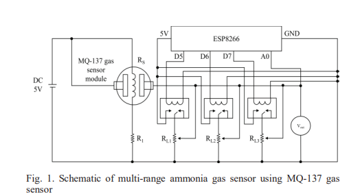
Fig. 1. Schematic using three relay-controlled load resistors ($R_{L1}$, $R_{L2}$, $R_{L3}$).
💡 Lucid Understanding: Why do we need to dynamically switch Load Resistors ($R_L$)?
The Solution (Auto-Scaling): By wiring three different resistors ($100\Omega$, $500\Omega$, $1.2k\Omega$) to mechanical relays, the ESP8266 can physically change its own electrical circuit on the fly! It "downshifts" to a lower resistor to handle massive toxic gas spikes without maxing out, and "upshifts" to a higher resistor to detect faint trace leaks with hyper-precision!
Dynamic Calibration & Flow Control
The control system continuously evaluates the concentration ($C_{NH3}$). Depending on the current parts-per-million, the ESP8266 triggers the specific relay corresponding to the optimal load resistance to prevent sensor saturation while maximizing resolution.
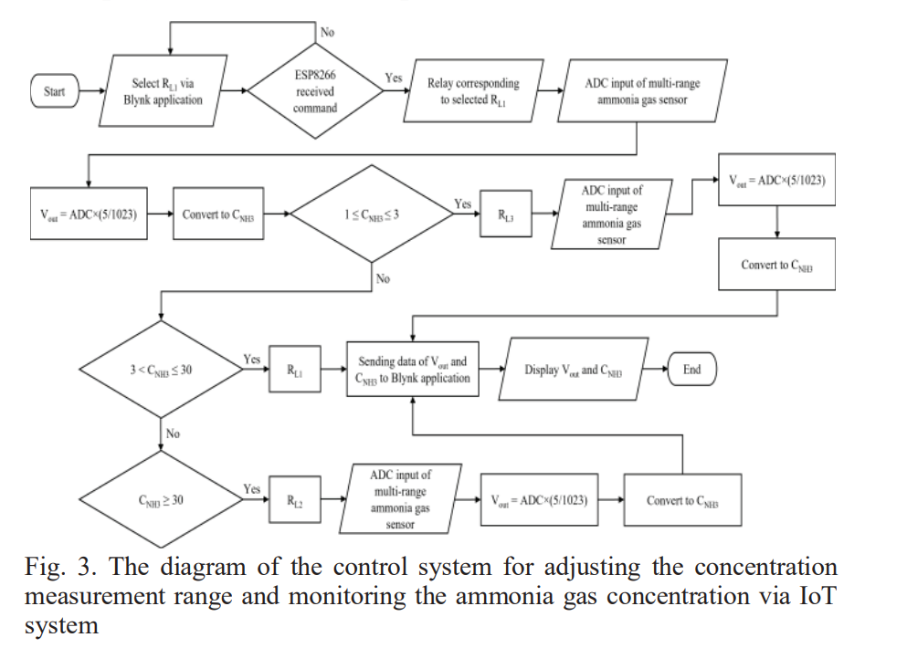
Fig. 3. Diagram of the control system for automatically adjusting the measurement range.
Low Range (1 - 3 ppm)
System engages Relay 3 ($R_{L3} = 1.2k\Omega$) for maximum sensitivity to faint gas traces.
Mid Range (3 - 30 ppm)
System engages Relay 2 ($R_{L2} = 500\Omega$) for balanced standard measurement.
High Range (> 30 ppm)
System engages Relay 1 ($R_{L1} = 100\Omega$) to prevent sensor saturation during massive spikes.
Comprehensive Calibration Results (Temp: 25.1°C, Hum: 52.0%)
| Gas (ppm) | Avg Output Voltage (V) | Resistance Ratio ($R_S/R_0$) | ||||
|---|---|---|---|---|---|---|
| $R_{L1}$ | $R_{L2}$ | $R_{L3}$ | $R_{L1}$ | $R_{L2}$ | $R_{L3}$ | |
| 1 ppm | 0.86±0.00 | 0.70±0.00 | 0.06±0.00 | 0.9785 | 0.9632 | 0.6622 |
| 3 ppm | 0.89±0.02 | 0.71±0.00 | 0.08±0.00 | 0.9326 | 0.9456 | 0.4731 |
| 5 ppm | 0.95±0.01 | 0.79±0.01 | 0.17±0.00 | 0.8453 | 0.8163 | 0.2251 |
| 10 ppm | 1.01±0.04 | 0.87±0.04 | 0.25±0.04 | 0.7688 | 0.7153 | 0.1446 |
| 30 ppm | 1.13±0.03 | 0.98±0.01 | 0.36±0.00 | 0.6503 | 0.6003 | 0.0972 |
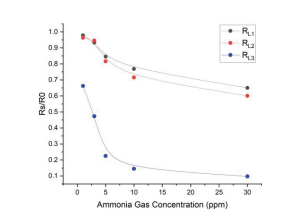
Fig. 4. Raw Resistance ratio ($R_S/R_0$) curve vs ppm.
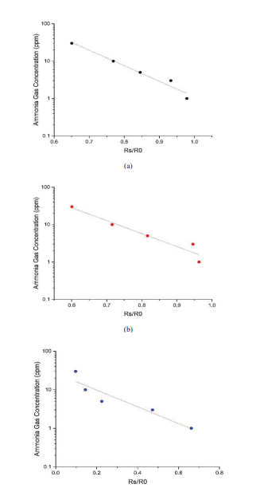
Fig. 5. Logarithm scale conversion for (a) $R_{L1}$, (b) $R_{L2}$, (c) $R_{L3}$ to derive linear equations.
Final Mathematical Models & Efficacy
By taking the calibration data and performing a linear regression on the logarithm scale, three distinct exponential equations were derived to calculate the absolute concentration ($C_{NH3}$), where $X$ is the Resistance Ratio ($R_S/R_0$):
High Range ($R_{L1} = 100\Omega$)
$$ C_{NH3} = 15880 e^{-9.568X} $$
$R^2 = 0.9985$
Mid Range ($R_{L2} = 500\Omega$)
$$ C_{NH3} = 3397.6 e^{-7.979X} $$
$R^2 = 0.9911$
Low Range ($R_{L3} = 1.2k\Omega$)
$$ C_{NH3} = 26.714 e^{-5.001X} $$
$R^2 = 0.7348$
Conclusion: The Power of Auto-Scaling
The results from Table IV definitively prove that a single static resistor results in massive calculation errors (up to 53%!) when the gas concentration fluctuates outside of that resistor's optimal boundary. By using an IoT-controlled ESP8266 to actively switch the load resistance, the system dynamically shifts into the optimal "gear" for the current environment:
1 - 3 ppm
Use $R_{L3}$
Error drops to 0.66%
5 - 30 ppm
Use $R_{L1}$
Error drops to 0.00%
> 30 ppm
Use $R_{L2}$
Error drops to 0.00%
Multi-Gas Feature Fusion & Decision Engine
Integrating multiple MQ sensors into a unified Health-Risk Index using mathematical drift compensation.
1. Calibration Studio & $R_0$ Baselines
Unlike the AEM1000 which features built-in calibration, MQ-series sensors require rigorous $R_0$ calibration and load-resistor adjustment to convert raw resistance into PPM. A standalone "Calibration Studio" dashboard was developed to adjust these baselines and environmental offsets, recording them dynamically into a persistent JSON file.
Table 1: Calibrated Baseline Resistances ($R_0$)
| Sensor | Target Gas | $R_0$ Value (Ω) |
|---|---|---|
| MQ-1 | Hydrogen Sulfide (H₂S) | 10,000 |
| MQ-2 | LPG / Smoke | 10,000 |
| MQ-135 | Air Quality / VOC | 9,800 |
| MQ-4 | Methane (CH₄) | 9,900 |
| MQ-136 | Ozone (O₃) | 10,000 |
Processing Equation ($R_s$)
$$ R_s = \left(\frac{V_{cc} \cdot R_L}{V_{sensor}}\right) - R_L $$
Power-Law PPM Conversion
$$ ppm = a \cdot \left(\frac{R_s}{R_0}\right)^b $$
2. Linear Drift Compensation
To correct temperature and humidity-induced long term drifts:
$$ C_{adj} = m \cdot V + b - (k_t \cdot \Delta T + k_h \cdot \Delta H) $$
3. Multi-Gas Feature Fusion for Decision Engine
All pollutant concentrations and environmental variables are fused into a unified mathematical feature vector:
$ X = [CO_2, PM_{2.5}, CH_4, O_3, VOC, H_2S, Temp, Humidity] $
This vector is processed by the Health-Risk Engine for classification. Each pollutant generates a weighted Health-Risk Index (HRI) based on its Threshold Limit Value (TLV):
$$ HRI = \sum \left( w_i \cdot \frac{C_i}{TLV_i} \right) $$
$C_i$ = measured concentration, $TLV_i$ = threshold limit, $w_i$ = hazard weight
💡 Lucid Understanding: What is Feature Fusion & HRI?
The Solution (Feature Fusion): By fusing all readings into a single vector ($X$) and calculating the Health-Risk Index ($HRI$), the system measures cumulative biological toxicity. A combination of sub-threshold toxins in a closed room can cause severe respiratory distress and cognitive impairment. The HRI dynamically sums these weighted fractions ($C_i/TLV_i$) and triggers an alert for the *combined* environmental risk before it becomes dangerous!
Observed Alerts & Data Summary
Unhealthy Air Quality
Triggered by High PM₂.₅ (93 μg/m³)
Elevated Infection Risk
Triggered by High CO₂ (1071 ppm). Poor Ventilation.
| Parameter | Observed Value | Interpretation |
|---|---|---|
| Temperature | 31.8–31.9°C | Normal indoor |
| Humidity | 59–60% | Stable |
| CO₂ | 1010–1075 ppm | Poor ventilation |
| PM₂.₅ | 93–99 µg/m³ | Unhealthy |
| VOC | 0.1 ppm | Normal |
| CH₄ | 11.9 ppm | Safe |
| O₃ | 22.4 ppb | Safe |
📚 View Paper References (1-16)
[1] O. Yildiz and H. S. Sucuoglu, "Development of real-time IoT-based air quality forecasting system using machine learning approach," Sustainability, 2025.
[2] S. Shahid, et al., "Innovations in air quality monitoring: Sensors, IoT and future research," Sensors, 2025.
[3] E. Collado, et al., "Open-source IoT-based air pollution monitoring system with protective case for tropical environments," HardwareX, 2024.
[4] J. E. M. Gador, et al., "A wireless monitoring system to quantify indoor–outdoor air pollution in a building," TENCON 2024.
[5-6] L. M. Easterline, et al., "Smart Air Monitoring with IoT-based MQ-2, MQ-7, MQ-8, and MQ-135 Sensors using NodeMCU ESP32," Procedia Computer Science, 2024.
[7] S. Zhi, et al., "Intelligent controlling of indoor air quality based on remote monitoring platform by considering building environment," ICSAI, 2017.
[8] P. Sadhana, et al., "IoT based weather and air quality monitoring system," IJPREMS, 2025.
[9] H. Gupta, et al., "An IoT Based Air Pollution Monitoring System for Smart Cities," ICSETS, 2019.
[10] X. Chen, et al., "IoT-Based Air Pollution Monitoring and Forecasting System," ICCCS, 2015.
[11] N. S. Desai and J. S. R. Alex, "IoT based air pollution monitoring and predictor system on Beagle Bone Black," ICNET, 2017.
[12] M. T. Hasan, et al., "'Breathe-Safe': An IoT based predictive tool for health care," IJSTR, 2019.
[13] H. P. Oswin, et al., "Using indoor CO2 concentration thresholds to understand and improve the air quality of public buildings: A practical approach," Energy and Buildings, 2025.
[14] R. P. Kumar, et al., "Machine learning-based prediction of hazardous fine PM2.5 concentrations: A case study of Delhi, India," Discover Geoscience, 2024.
[15] G. S. Gopikrishnan, et al., "Exposure to surface ozone and its associated health effects and economic burden in India," Global Transitions, 2025.
[16] M. Ramadan, et al., "Intelligent multi-pollutant prediction for indoor air quality management in industrial buildings using adaptive sensor fusion," Journal of Building Engineering, 2025.
GIS-based Methane Mapping System
Deriving the exact calibration mathematics and environmental drift correction formulas for the MQ-4.
Sensor Architecture Comparison
Compared to more sophisticated technologies such as non-dispersive infrared (NDIR) or catalytic bead sensors, MOS sensors offer a compact, power-efficient, and affordable solution (₹250 - ₹450) ideal for IoT-based and real-time field applications.
The MQ-4 detects methane from 200 to 10,000 ppm with a rapid response time of less than one second ($T_{90} < 1s$), making it suitable for instantaneous leak detection and GIS mapping.
Table I. Gas Sensor Technologies
| Sensor Type | Range (ppm) | Accuracy | Response |
|---|---|---|---|
| NDIR | 1 - 5,000 | ±1 - 5% | < 1s |
| MQ-4 (MOS) | 200 - 10,000 | ±10 - 15% | < 1s |
| TGS 8410 | 500 - 12,500 | ±5 - 10% | 15 - 30s |
| Catalytic Bead | 10 - 1,000 | ±10% | 10 - 20s |
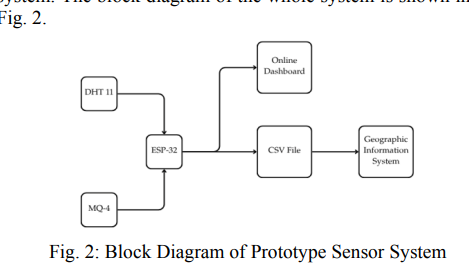
Fig. 2. Block Diagram of Prototype Sensor System feeding into GIS mapping.
A. Detection & Environmental Interferences
The sensing mechanism of the MQ-4 relies on baseline resistance ($R_0$) and gas-sensitive resistance ($R_S$), both of which are highly susceptible to drift under varying ambient conditions.
Variation in temperature can change the kinetics of gas adsorption and desorption on the surface. Similarly, humidity can interfere with the conduction paths. Therefore, correcting these environmental interferences is essential for achieving accurate, real-time methane values in open environments for GIS-based mapping.
B. Mathematical Quantification & Calibration
The calibration curve is derived from the datasheet log-log relationship between the concentration ($x$) and the resistance ratio.
1. Voltage Divider Equation
$$ R_S = R_L \left(\frac{V_H}{V_{RL}} - 1\right) $$
Where $V_H=5V$ and $R_L=10k\Omega$.
2. Log-Log Linearization
$$ \log\left(\frac{R_S}{R_0}\right) = B \cdot \log(x) + \log(A) $$
3. Exact Quantification Formula
Using boundary points $200$ ppm ($1.8$) and $10,000$ ppm ($0.45$), we solve for constants $A=11.77$ and $B=-0.354$, resulting in the concentration ($x$) equation:
$$ x = 1058.75 \left(\frac{R_S}{R_0}\right)^{-2.825} $$
💡 Lucid Understanding: Why do we use Log-Log curves for sensors?
By taking the logarithm of both the resistance ratio (Y-axis) and the gas concentration (X-axis), the curved exponential line flattens out into a perfectly straight line ($y = mx + c$). Once the line is straight, we can use basic high school algebra to mathematically derive the exact constants ($A$ and $B$) and accurately predict PPM for any resistance reading!
Temperature & Humidity Drift Correction
To guarantee absolute accuracy across diverse field conditions, thermodynamic correction factors for temperature ($C_T$) and relative humidity ($C_H$) are applied to the final model (where $T_{cal} = 25^\circ C$ and $RH_{cal} = 60\%$):
Temperature Correction
$$ C_T = e^{\frac{T - T_{cal}}{20}} $$
Humidity Correction
$$ C_H = 1 + 0.02(RH - RH_{cal}) $$
Final Environmentally Corrected Gas Equation:
$$ x = 1058.75 \left(\frac{R_S}{R_0}\right)^{-2.825} \cdot C_T \cdot C_H $$
C. Hardware Implementation & Pre-Conditioning
The hardware setup connects the MQ-4 sensor to the ESP32 through a customizable load resistor ($R_L$) typically ranging from $10k\Omega$ to $47k\Omega$. However, before any accurate mathematical measurements can be recorded, the sensor must be conditioned.
The "Burn-In" Period
Chemical sensors contain a micro-heater that must bake the chemical layers to a steady state. The required stabilization (burning-in) period for an MQ-4 is 24 to 48 hours of continuous power. Only after this initial burn-in can the true clean-air reference resistance ($R_0$) be accurately determined.
Field Deployment Results
Following proper calibration and environmental correction, the sensor network was deployed to measure trace methane concentrations across various real-world environments to validate the mathematical model.
Table II. Methane Concentration by Location
| Location | Raw $V_{RL}$ Range (V) | Computed Methane (ppm) |
|---|---|---|
| 🛋️ Living Room | 0.392 - 0.653 | 1 - 5 |
| 🍳 Kitchen | 0.805 - 0.907 | 10 - 15 |
| ⛽ Petrol Pump | 1.169 - 1.209 | 37 - 42 |
📚 View Paper References (1-13)
[1] T. Aldhafeeri, et al., "Developments and future perspectives," Inventions, 2020.
[2] B. M. Erland, et al., "Recent advances toward transparent methane emissions monitoring: a review," Environmental Science & Technology, 2022.
[3] S. Sharma, et al., "Remote Sensing and GIS in Natural Resource Management," Remote Sensing, 2024.
[4] S. Iwaszenko, et al., "Detection of natural gas leakages using a laser-based methane sensor and UAV," Remote Sensing, 2021.
[5] Y. Wang, et al., "Methane emissions in japonica rice paddy fields under different elevated CO2 concentrations," Nutrient Cycling in Agroecosystems, 2022.
[6] D. A. H. Fakra, et al., "A simple and low-cost integrative sensor system for methane and hydrogen measurement," Sensors International, 2020.
[7] D. H. Cusworth, et al., "Using remote sensing to detect, validate, and quantify methane emissions from California solid waste operations," Environmental Research Letters, 2020.
[8] G. Schillaci, et al., "Analyzing methane emissions using satellite imagery and artificial intelligence," Abu Dhabi Int. Petroleum Exhib. and Conf., 2024.
[9] A. Tripathi, "Remote sensing-based analysis of methane (CH4) and ozone (O3) concentration variations," Environmental Monitoring and Assessment, 2025.
[10] Atlas GIS, "Atlas GIS – GIS services, GIS enabling A Smart world service," 2025.
[11] Fu, Li, et al., "Enhancing methane sensing with NDIR technology: Current trends and future prospects," Reviews in Analytical Chemistry, 2023.
[12] E. E. Karpov, et al., "Energy efficient planar catalytic sensor for methane measurement," Sensors and Actuators A: Physical, 2013.
[13] T. Hong, et al., "State-of-the-art of methane sensing materials: A review and perspectives," TrAC Trends in Analytical Chemistry, 2020.
Garbage Bin Methane Reduction & MQ4 Calibration
Analyzing the effectiveness of Charcoal and Sodium Bicarbonate as methane adsorbents.
MQ4 Sensor Pressure Calibration
The MQ4 Gas Sensors were calibrated by placing an MPX4115AP Pressure Sensor inside the bin. The output voltage from the ADC (multiply by 0.00488 for a 5V system) was converted into an absolute pressure reading using the sensor's transfer function:
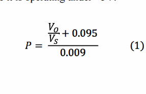
Where $V_O$ is output voltage, $V_S$ is source voltage (+5V), and $P$ is Absolute Pressure.
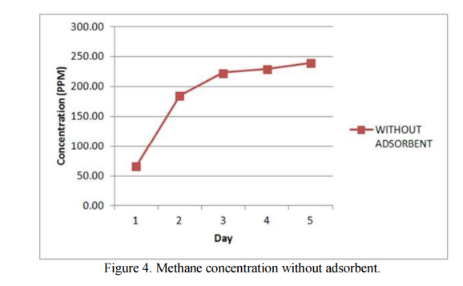
Fig. 4. Methane concentration buildup without any adsorbent (Reaches ~250 PPM).
Adsorbent Efficacy Analysis (250g vs 500g)
To determine the possible effects of adsorbents on methane reduction, three configurations were tested: solely activated charcoal, solely sodium bicarbonate (baking soda), and a combination of both. These were tested using two quantities: 250g and 500g.
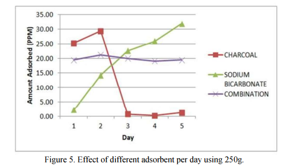
Fig. 5. Effect of different adsorbents per day using 250g.
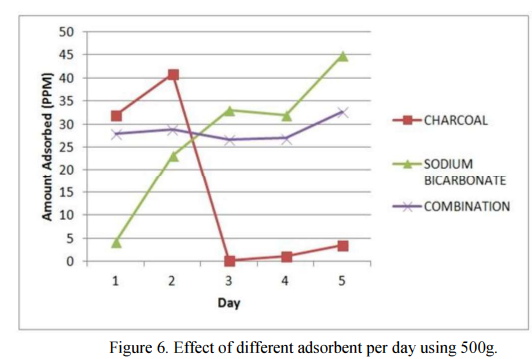
Fig. 6. Effect of different adsorbents per day using 500g.
Activated Charcoal
Initially highly effective, but completely loses its absorbing capacity in the latter half of the experiment. The computed t-value (500g) was 1.076.
Sodium Bicarbonate
Initially insignificant reduction, but its effectiveness increased in a massive leap as time went on. Computed t-value (500g) was 1.454. Most effective overall.
Combination
Combining both adsorbents showed a consistent, steady effect on reducing methane linearly from Day 1 to Day 5, balancing the strengths of both materials.
💡 Lucid Understanding: Why did Charcoal fail while Baking Soda succeeded?
Conversely, Sodium Bicarbonate (Baking Soda) undergoes a slow chemical reaction with the highly acidic byproducts of rotting garbage. As the garbage rots more (Days 3-5), the acid triggers the baking soda to neutralize the environment, which indirectly halts the anaerobic bacteria producing the methane! This is why its effectiveness accelerates over time.
Final Efficacy Results
The researchers used activated charcoal, sodium bicarbonate, and a combination of the two as adsorbents to evaluate their effects in reducing methane (derived from the decomposition of fish guts) in the designed garbage bin, comparing it to a control bin without any adsorbent.
13.16%
Sodium Bicarbonate
Highest Average Reduction
9.22%
Combination
Steady & Consistent
0.53%
Charcoal
Failed (Pore Saturation)
In addition, the amount of adsorbent was strongly correlated to performance: doubling its amount directly doubled the amount of methane reduced. Thus, it was definitively concluded that Sodium Bicarbonate is the most viable and highly effective alternative for chemical methane reduction in smart waste management systems.
📚 View Paper References (1-8)
[1] Solid Waste Management Association of the Philippines (SWAPP), "Economic Aspects of Informal Sector Activities in Solid Waste Management," 2011.
[2] M. Suuberg, "Basics of Landfill Gas," Massachusetts Executive Office of Environmental Affairs, 2007.
[3] M. Okubo, et al., "Odor Control Using the AC Barrier - Type Plasma Reactors," IEEE Transactions on Industry Applications, 2001.
[4] R. Zhang, et al., "Control of Ammonia and Odors in Animal Houses by a Ferroelectric Plasma Reactor," IEEE Transactions on Industry Applications, 1996.
[5] T. Nakamoto, et al., "Active Odor Sensing System," Proceedings of the IEEE International Symposium on Industrial Electronics, 1997.
[6] T. Nakamoto, et al., "Perfume and Flavour Identification by Odour Sensing System Using Quartz-Resonator Sensor Array," 1991 International Conference on Solid-State Sensors, 1993.
[7] S. Areejit and P. Sooraksa, "Odor Treatment System for Waste Management," 2006 SICE-ICASE International Joint Conference, 2006.
[8] P. Y. Kumar and T. S. Ganesh, "Design and Construction of an Odour Sensor for Various Biomedical Applications," Annual IEEE India Conference - Indicon, 2005.
Drone-Mounted Multi-Gas Detection
Wide-area surveillance using MQ-series sensors, ESP32, and Node-RED dashboards.
The Chemiresistive Principle
A suite of MQ series gas sensors (MQ2, MQ4, MQ8, and MQ9) enables the system to identify various hazardous gases. These sensors operate based on the chemiresistive principle, where the electrical resistance of the sensing element changes in the presence of target gases.
The sensing material, typically $SnO_2$ (tin dioxide), interacts with gas molecules, altering the surface conductivity. When exposed to reducing gases like methane ($CH_4$), LPG, CO, or hydrogen ($H_2$), the resistance decreases due to electron donation to the conduction band.
The gas concentration $C$ is derived using the empirical resistance ratio:
$$ \frac{R_s}{R_0} = A \cdot C^B $$
Where $R_s$ is resistance in gas, $R_0$ is clean air baseline, and $A, B$ are constants.
Table I. MQ Sensor Gas Detection Thresholds
| Sensor | Detected Gas | Range (PPM) |
|---|---|---|
| MQ-2 | LPG | 200 – 10,000 |
| MQ-4 | Methane | 200 – 10,000 |
| MQ-8 | Hydrogen | 100 – 10,000 |
| MQ-9 | Carbon Monoxide | 10 – 10,000 |
💡 Lucid Understanding: The "Student-Lab" Calibration Hack
- LPG & Methane: A standard $1 butane lighter (pressed without igniting) releases pure combustible gas.
- Carbon Monoxide (CO): Burning an incense stick in a closed box generates traceable amounts of CO from incomplete combustion.
- Hydrogen: Dropping two wires from a 9V battery into a cup of saltwater (Electrolysis) literally splits $H_2O$, bubbling pure Hydrogen gas directly onto the sensor!
This student-friendly method allows you to mathematically map the $R_s/R_0$ curve without needing a multi-million dollar chemical laboratory.
Developed Drone GDM vs Conventional GDM
| Feature | Developed Drone GDM | Conventional GDM |
|---|---|---|
| Detection Approach | Uses MQ2, MQ4, MQ8, MQ9 sensors integrated with ESP32 microcontroller | Uses fixed sensors (electrochemical, catalytic, infrared) [8] |
| Mobility | Drone-mounted system for wide-area surveillance | Stationary sensors requiring manual placement [9] |
| Communication | Uses MQTT for real-time wireless data transmission | Wired or short-range wireless (SCADA) [9] |
| Data Visualization | Node-RED dashboard for real-time monitoring and mapping | Basic indicator lights, alarms, or local data logs [8] |
| Deployment & Alert | Easy to deploy via drone covering hard-to-reach areas. Live dashboard alerts. | Requires fixed installation, local alarms, manual maintenance. |
Node-RED Real-Time Telemetry
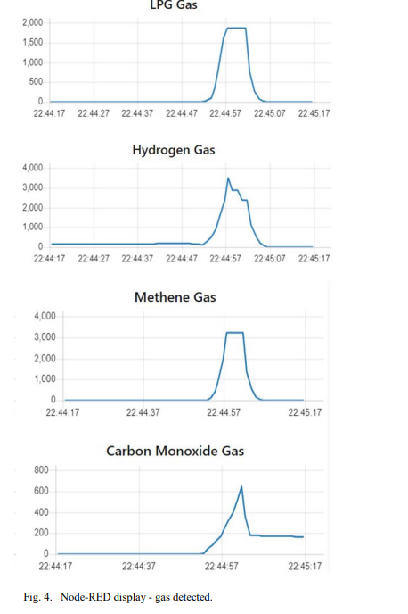
Fig 4. Node-RED display - live gas detection spikes.
During the practical student-lab calibration tests, sudden spikes in gas concentrations were successfully captured and transmitted over MQTT to the Node-RED dashboard.
- 🔥 LPG: Peaked at 1,800 ppm
- 💨 Methane: Peaked at 3,500 ppm
- 💧 Hydrogen: Peaked at 3,500 ppm
- 🌫️ Carbon Monoxide: Peaked at 700 ppm
These rapid spikes confirm the high sensitivity and nearly instant response time of the MQ sensor array when mounted on the drone platform.
📚 View Paper References (1-11)
[1] H. J. Hadim, et al., "Application of MQ-Sensors to Indoor Air Quality Monitoring in Lab based on IoT," IEEE, 2021.
[2] P. Asha, et al., "IoT enabled environmental toxicology for air pollution monitoring using AI techniques," Environmental Research, 2022.
[3] A. T. Ajiboye, et al., "Graphical method for determination of MQ-series gas sensor circuit parameters," Southern Brazilian Journal of Chemistry, 2021.
[4] A. U. Husnain, et al., "Gas concentration mapping and source localization through UAS using model-free RL agents," PLOS ONE, 2024.
[5] L. García, et al., "Smart Air Quality Monitoring IoT-Based Infrastructure for Industrial Environments," Sensors, 2022.
[6] M. F. Al-Okby, et al., "Mobile Detection and Alarming Systems for Hazardous Gases in Laboratories and Industrial Locations," Sensors, 2021.
[7] P. Zade, et al., "GSM-Based Gas Detection System," Int. Conf. on Research Methodologies, 2023.
[8] Z. Yunusa, et al., "Gas sensors: A review," Sensors & Transducers, 2014.
[9] M.-S. Kim, et al., "Comparative analysis of ultrasonic and traditional gas-leak detection systems," Processes, 2023.
[10] X. Liu, et al., "A survey on gas sensing technology," arXiv, 2013.
[11] Syaril Azrad, et al., "Quadrotor UAV Indoor Localization Using Embedded Stereo Camera," Applied Mechanics and Materials, 2014.
IoT Closed-Loop Freshness Preservation
Integrating real-time sensing, active actuation, and cloud-based ML for perishable food management.
The Problem: Passive Monitoring
Preserving the freshness of perishable produce (like climacteric fruits) is a global challenge. Bananas ripen quickly and give off ethylene and carbon dioxide, which speeds up spoilage [1].
Early studies used high-accuracy e-nose sensors to detect these spoilage gases [9][14], but they were limited by high cost and laboratory-only feasibility. Furthermore, most existing systems either focus on passive monitoring without feedback, or predictive modeling without real-time control, leaving the actual environment unchanged and leading to significant post-harvest losses.
The Solution: Closed-Loop Control
This study introduces a low-cost, IoT-enabled framework that combines real-time sensing with active environmental control. It uses a DHT11 sensor (temperature/humidity), an MQ-135 sensor (ethylene and CO₂ via Rs/Ro calibration), and an ESP32 controller.
Crucially, the system operates a Peltier cooler and ventilation fan to actively regulate the environment. Sensor data is sent to Firebase for visualization, while a cloud-based Machine Learning model predicts freshness in real time [7][13].
💡 Lucid Understanding: Passive vs Closed-Loop Control
Closed-Loop Control means the system takes physical action by itself. When the MQ-135 detects high Ethylene, the ESP32 physically clicks a relay to turn on an exhaust fan. When the DHT11 detects high heat, it turns on a Peltier cooler. The loop is closed: Sensor $\rightarrow$ Brain $\rightarrow$ Actuator $\rightarrow$ Environment Changes $\rightarrow$ Sensor. This transforms a basic monitoring tool into a fully autonomous preservation machine.
Hardware Component Architecture
The prototype integrates low-cost and easily available components to monitor and regulate the environmental conditions that influence fruit ripening.
- ⚙️ ESP32 Microcontroller: Central CPU handling sensor data, relay control, and cloud communication.
- 🌡️ DHT11 Sensor: Measures temperature and relative humidity inside the chamber.
- 👃 MQ-135 Sensor: Detects ethylene and CO₂ gas concentration through changes in sensor resistance ($R_s/R_0$).
- ❄️ Peltier Module: Controls the chamber temperature by cooling or heating as needed.
- 🔌 Relay Module: Automatically switches the Peltier and exhaust fan based on threshold values.
- ☁️ Firebase Cloud: Stores the database, ML model, and Flask API server.
- ⚡ Power Supply: Provides regulated 5V and 12V DC.
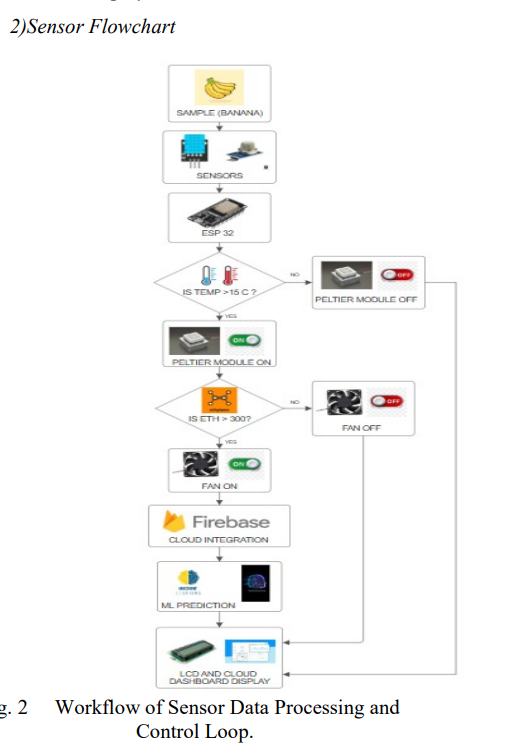
Fig. 2. Workflow of Sensor Data Processing and Control Loop.
Experimental Results & Conclusion
In a case study with bananas, the system actively maintained a temperature close to 15°C and humidity around 90%. As a direct result, the system increased shelf life from five to eight days.
This blend of sensing, control, and prediction offers a highly scalable and practical method for smarter food management, radically reducing waste in small-scale storage applications.
This validates the hardware architecture of our own Edge Olfaction project! It proves that an ESP32 connected to MQ sensors and environmental actuators can measurably extend the life of perishables, creating real economic value.
Complete Process & Threshold Logic
The system continuously senses environmental parameters and automates control through a feedback loop. Sensor readings for temperature, humidity, ethylene, and CO₂ are taken every few seconds by the ESP32 and uploaded to Firebase in real time.
- Temperature Control: When temperature exceeds 15°C, the ESP32 triggers a relay to turn on the Peltier module for cooling.
- Gas Control: If ethylene or CO₂ levels rise above set limits, the fan activates to regulate and vent the gas concentration.
Process Flow: Sensor Data $\rightarrow$ Threshold Comparison $\rightarrow$ Relay Actuation $\rightarrow$ Environment Stabilization $\rightarrow$ Cloud Update $\rightarrow$ ML Prediction
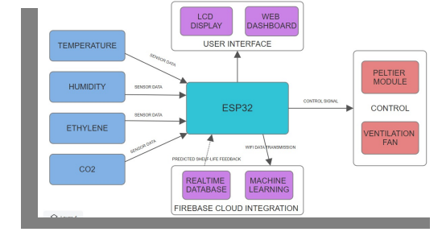
Fig. 1. Hardware Architecture and Data Flow.
Machine Learning Prediction Pipeline
The data is simultaneously uploaded to Firebase for storage and ML prediction of remaining shelf life. We used five key features: Ethylene (ppm), CO₂ (ppm), Temperature (°C), Humidity (%), and Time (hrs). The dataset of 3314 samples was split 80/20 to classify the target variable 'Status' into two classes: 'Spoiled' and 'Not Spoiled'.
Table I. Performance Metrics of ML Models
| Model | Accuracy | Precision | Recall | F1-Score |
|---|---|---|---|---|
| Random Forest | 0.9623 | 0.9624 | 0.9623 | 0.9622 |
| SVM | 0.9600 | 0.9592 | 0.9578 | 0.9573 |
| Logistic Regression | 0.9443 | 0.9448 | 0.9443 | 0.9437 |
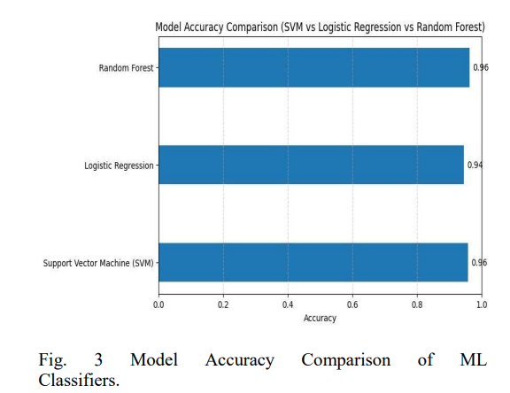
Fig. 3. Model Accuracy Comparison of ML Classifiers.
Cloud Deployment Architecture
We trained the supervised Random Forest model to classify banana freshness stages based on the gathered parameters. We serialized the trained model using joblib and deployed it within a Flask-based REST API hosted on a cloud server.
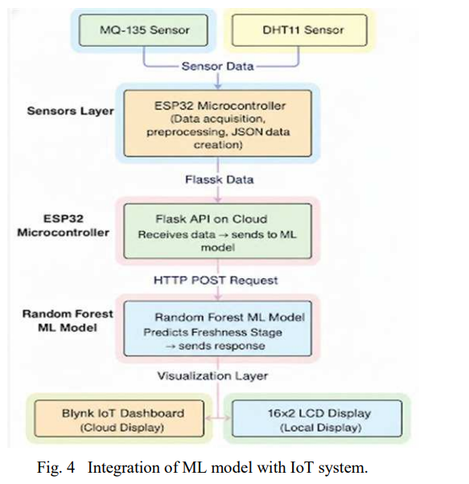
Fig. 4. Integration of ML model with IoT system.
💡 Lucid Understanding: Why Flask and Joblib?
To solve this, the AI is trained on a powerful PC. The "brain" of the AI is saved into a tiny file using
joblib. That file is then uploaded to a Cloud Server running Flask (a Python web framework). Now, the ESP32 simply sends a quick internet message (HTTP POST request) to the Flask server asking, "Here is the data, is the food spoiled?". The cloud does the heavy math and instantly replies "Yes" or "No".
Case Studies: Uncontrolled vs Controlled
Case 1: Uncontrolled Environment
- 📍 Setup: Ripe banana in a closed container, no environmental control. Average 27°C and <55% humidity.
- 📈 Observation: Ethylene and CO₂ levels steadily increased. By day five, the banana showed clear discoloration, softening, and odor.
- 📊 Data: Ethylene > 87 ppm, CO₂ > 27 ppm.
- 🛑 Result: ML model labeled it "Spoiled" by Day 5. Without regulation, gas accumulation exponentially speeds up ripening.
Case 2: Controlled (Automation Activated)
- 📍 Setup: ESP32 managed chamber temp at ~22°C and humidity at ~55% using the Peltier cooler and fan.
- 📉 Observation: Both ethylene and CO₂ levels rose at a much slower rate. The fruit held its color and firmness for up to 8 days.
- 📊 Data: On Day 6, Ethylene < 87 ppm, CO₂ > 27 ppm (stable ripening).
- ✅ Result: ML model predicted "Not Spoiled" until Day 7.
The machine learning prediction model supported these findings, predicting an increased shelf life of nearly 60% compared to the uncontrolled condition. The ESP32 actively controls the Peltier module and ventilation fan to keep storage conditions strictly within the optimal safety ranges shown below.
Table II. Uncontrolled Environment
| Parameter | Safe Range | Actual | Alert |
|---|---|---|---|
| Ethylene (ppm) | < 87 | > 87 | ⚠️ Yes |
| CO₂ (ppm) | < 27 | > 27 | ⚠️ Yes |
| Temp (°C) | 15 - 22 | > 22 | ⚠️ Yes |
| Humidity (% RH) | < 65 | > 65 | ⚠️ Yes |
Table III. Controlled Environment
| Parameter | Safe Range | Actual | Alert |
|---|---|---|---|
| Ethylene (ppm) | < 87 | 80 | ✅ No |
| CO₂ (ppm) | < 27 | 22 | ✅ No |
| Temp (°C) | 15 - 22 | 20 | ✅ No |
| Humidity (% RH) | < 65 | 55 | ✅ No |
💡 Lucid Understanding: Why are Bananas so dangerous in closed storage?
Ethylene is literally a "ripening hormone". If you put a ripe banana next to an unripe apple in a closed box, the banana's ethylene will force the apple to over-ripen and rot prematurely. This is why sensing Ethylene (with the MQ-135) and actively venting it out (with the exhaust fan) is the absolute secret to extending shelf life!
Future Work & Scalability
- The framework can easily be extended to monitor more types of perishable items, like other climacteric fruits and vegetables.
- This can be achieved by adding multi-gas and environmental sensors to improve accuracy and reliability.
- Incorporating more advanced Machine Learning algorithms (like Deep Learning or LSTMs) can further improve spoilage prediction accuracy.
📚 View Paper References (1-20)
[1] B. Kuswandi, Freshness sensors for food packaging, Reference Module in Food Science (2017).
[2] FAO, Global food losses and food waste—Extent, causes and prevention, Rome, 2011.
[3] J. Parfitt, M. Barthel, S. Macnaughton, Food waste within food supply chains, Phil. Trans. R. Soc. B 365(1554) (2010).
[4] S. Validi, A. Bhattacharya, P.J. Byrne, A case analysis of a sustainable food supply chain distribution system, IJPE 152 (2014) 71–87.
[5] M.V. Vilarino, C. Franco, C. Quarrington, Food loss and waste reduction as an integral part of a circular economy, Front. Env. Sci. 5 (2017).
[6] T.P. da Costa, et al., A systematic review of real-time monitoring technologies, Sustainability 15(1) (2022) 614.
[7] R. Ramanathan, et al., Motivations and challenges for food companies in using IoT sensors, Sustainability 15(2) (2023) 1665.
[8] A. Popa, et al., An intelligent IoT-based food quality monitoring approach using low-cost sensors, Symmetry 11(3) (2019) 374.
[9] M.V.C. Caya, et al., Monitoring and detection of fruits and vegetables spoilage in the refrigerator using electronic nose, IEEE HNICEM (2019).
[10] S. Fang, Design of intelligent detection system for food spoilage, IEEE ICICTA (2018).
[11] M.A. Khan, et al., IoT based grocery management system, SysCoBIoTS (2019).
[12] S. Hossain, A. Abdelgawad, Smart refrigerator based on IoT, (2018).
[13] M.M. Masuk Shopnil, et al., An ensemble ML model to predict the wastage of food, NCIM (2023).
[14] N. Hebbar, Freshness of food detection using IoT and machine learning, ic-ETITE (2020).
[15] W. Tan, et al., The feasibility of early detection and grading of apple bruises using hyperspectral imaging, J. Chemometrics 32(10) (2018).
[16] M. Mohammed, et al., Prediction of date fruit quality attributes during cold storage based on their electrical properties using ANNs, Foods 11(11) (2022).
[17] R.D.C. Magno, et al., Monitoring of banana ripening process and identification of banana type using FRCNN, LSTM, and color segmentation, IEEE HNICEM (2022).
[18] R.R. Varghese, et al., Detection and grading of multiple fruits and vegetables using machine vision, ICSCC (2021).
[19] H. Nasir, et al., The implementation of IoT based smart refrigerator system, ICSSA (2018).
[20] N.N. Ahamed, et al., Perishable food products contains safe in cold supply chain management using blockchain technology, ICACCS (2021).
Indoor Air Quality Monitoring & Calibration
Decentralized ESP-NOW mesh networking and MQ-135 NDIR calibration for scalable office environments.
The IoT Node & Mesh Networking
Reliability in a sprawling office environment cannot rely on a single central router. It was achieved by utilizing decentralized mesh networking with the ESP-NOW protocol to ensure fault-tolerant communication between nodes, independent of traditional Wi-Fi infrastructure.
The nodes incorporate low-power modes to maintain consistent operation over extended periods, consuming less than 30mA during active operation. Data transmission reliability was proven to be over 95%.
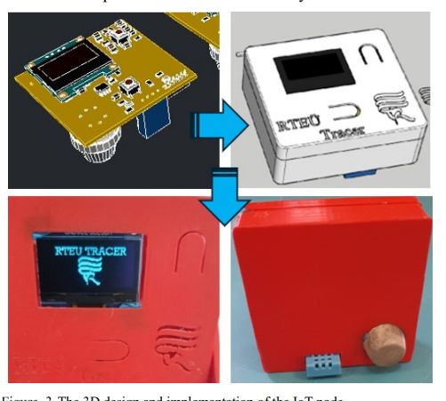
Fig. 3. The 3D design, PCB layout, and physical implementation of the IoT node.
Hardware Calibration Process
The effectiveness of the proposed model depends heavily on its accuracy. Calibration of the IoT node's MQ-135 gas sensor was carried out by exposing the sensor to known concentrations of CO₂ and comparing the results to a commercial industry-standard reference instrument: the Extech SD800.
- 🔬 NDIR Technology: The Extech SD800 uses a Non-Dispersive Infrared (NDIR) sensor to detect CO₂ levels, providing incredibly reliable and precise measurements.
- 📏 Measurement Range: 0 to 5000 ppm with an impressive accuracy of ±50 ppm (±5% of reading).
- 🌡️ Temperature: Range of -10 to 50°C with an accuracy of ±0.5°C.
- ✅ Validation: By continuously recording the MQ-135 output alongside the SD800, we mapped the non-linear chemical resistance curve of the MQ-135 directly to true PPM values.
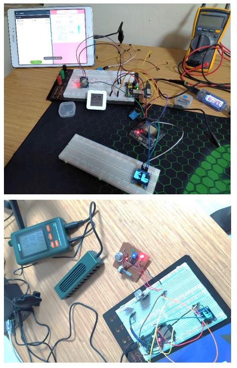
Hardware setup comparing the ESP32/MQ-135 breadboard circuit against the Extech reference instrument.
💡 Lucid Understanding: Why calibrate against NDIR?
Conversely, the MQ-135 is a cheap, $2 chemical sensor whose baseline resistance drifts depending on temperature and humidity. By running them side-by-side in a chamber, we mathematically train our $2 hardware to mimic the $200 laser! This calibration transfers high accuracy to ultra-cheap hardware, allowing us to deploy hundreds of nodes across an office building affordably.
24-Hour Office Data Analysis
Figure 5 presents the CO₂ levels measured over 3,250 samples in a 24-hour period within an indoor office environment. The CO₂ concentration fluctuated between 500 and 3500 ppm, showing significant variation throughout the day.
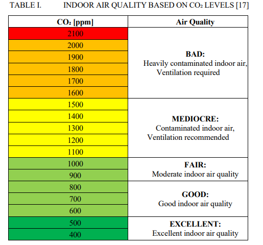
Table I. Indoor Air Quality Based on CO₂ Levels [17].
- Poor Quality (> 1500 ppm): Periods of high CO₂ concentration reflect poor air quality, likely due to insufficient ventilation or high occupancy. These spikes lead to discomfort, drowsiness, or health issues for the occupants.
- Mediocre Quality (1000 - 1500 ppm): Contaminated indoor air where ventilation is highly recommended.
- Good Quality (< 1000 ppm): Suggests better air quality, aligning with improved HVAC ventilation or reduced room occupancy.
📚 View Paper References (1-18)
[1] P. Gopalakrishnan, et al., "Effect of indoor air quality on human health-A review," AIP Conf. Proc., vol. 2408, 2021.
[2] V. Barot and V. Kapadia, "Air Quality Monitoring Systems using IoT: A Review," ComPE 2020.
[3] A. Hernández-Gordillo, et al., "Recent advancements in low-cost portable sensors for urban and indoor air quality monitoring," Air Qual. Atmos. Heal., 2021.
[4] M. R. García et al., "Review of low-cost sensors for indoor air quality: Features and applications," Appl. Spectrosc. Rev., 2022.
[5] R. Chataut, et al., "Unleashing the Power of IoT: A Comprehensive Review of IoT Applications," Sensors 2023.
[6] S. M. Darroudi and C. Gomez, "Bluetooth Low Energy Mesh Networks: A Survey," Sensors 2017.
[7] M. R. Ghori et al., "Enhancing Reliability and Stability of BLE Mesh Networks," Sensors 2024.
[8] D. Hercog, et al., "Design and Implementation of ESP32-Based IoT Devices," Sensors 2023.
[9] "ESP32-S3 Wi-Fi & BLE 5 SoC | Espressif Systems," Accessed: Nov. 10, 2024.
[10] K. B. Kumar Sai, et al., "Low Cost IoT Based Air Quality Monitoring Setup Using Arduino and MQ Series Sensors With Dataset Analysis," Procedia Comput. Sci., 2019.
[11] "101200 Soldered | Mouser Europe," Accessed: Nov. 10, 2024.
[12] "MCP73831 | Microchip Technology," Accessed: Nov. 10, 2024.
[13] "ESP-NOW Wireless Communication Protocol," Espressif Systems, Accessed: Nov. 10, 2024.
[14] J. A. Cujilema Paguay, et al., "Secure home automation system based on ESP-NOW mesh network," IEEE Lat. Am. Trans., 2023.
[15] "Extech SD800: CO2, Humidity and Temperature Datalogger," Teledyne FLIR, Accessed: Nov. 11, 2024.
[16] S. Dey and T. Bera, "Design and Development of a Smart and Multipurpose IoT Embedded System Device," ELEXCOM 2023.
[17] "Return To The Office: We Need To Measure CO2 Levels Indoors," Safecility, Accessed: Nov. 14, 2024.
[18] A. Maier, et al., "Comparative analysis and practical implementation of the ESP32 microcontroller module," ITA 2017.
Calibrating Gas Sensors Using LabView
Solving poor datasheet formulas through linear regression and sample comparison.
The Calibration Problem
Calibration is the critical process of obtaining the most accurate sensor data. MQ gas sensors are designed to measure different types of gas simultaneously, but the standard datasheet formulas for calibration are notoriously poor and inaccurate in real-world scenarios.
To solve this problem, two fundamental steps are required:
1) Know exactly what the measured substance is.
2) Identify the specific formula for that environment.
The LabView Solution
This article presents a robust method of calibrating gas sensors using LabView. The acquisition system consists of a sensor network that transmits raw data to an acquisition board, and ultimately to the computer.
Linear Regression
Used to mathematically identify the calibration equation that maps raw sensor data to true concentration, bypassing the flawed datasheet defaults.
Samples Compare
Used to dynamically compare real-time samples against established baselines to verify calibration accuracy constantly.
This perfectly validates our entire approach of abandoning the standard MQ datasheets! Since the datasheet formulas are scientifically inadequate, our custom Python backend using machine learning (like ResGAT and Linear Regression) to derive our own custom calibration curves on the Raspberry Pi is the only correct path forward for enterprise-grade accuracy.
Data Acquisition & Nonlinear Regression
The reason to study the calibration of gas sensors is the error occurred after the data acquisition. Usually the calibration formula is implemented on the acquisition board. In this project, we implement the gas sensors calibration using LabView interface. The gases values data are collected with an Arduino Mega 2560 board. To receive the data on the computer using LabView 2013, we tested two methods of data acquisition (LIFA Base soft and VISA card virtual instrument).
MQ sensors are most used in applications due to their low price and reasonably good lifespan and sensitivity characteristics. It is commercially available in a wide variety of models. In the calibration process, we use a voltage sensor to adapt a voltage result of gas sensor.
The first formula shows that the MOS sensor is nonlinear with gas concentration:
Where $R$ is sensor resistance, $R_0$ is resistance in air, $C_{gas}$ is gas concentration, $\beta$ is characteristic power, $k_{gas}$ depends on gas.
The formula is a power function with a negative exponent ($y = ax^b, b < 0$). We solve the nonlinear regression equation using the formulas:
💡 Lucid Understanding: Why Logarithms?
By applying a logarithm to both sides of the equation (Equation 4), we magically flatten that curve into a perfectly straight line! Once it is a straight line, it becomes incredibly easy to find the slope ($b$) and the starting point ($\log a$). Equation 5 is just reversing the logarithm (using $10^x$) to get the final PPM value back.
Extracting the Formula via WebPlotDigitizer
In the datasheet, there is not a formula for each gas type of MQ sensors. Using the datasheet graphic, we can extract the formula of the gas. For example, we use the MQ2 sensor to extract the points on the graph ($H_2 ppm = f(R_s/R_0)$) for $H_2$. A set of points are extracted using the WebPlotDigitizer to get a mathematical model that matches the data.
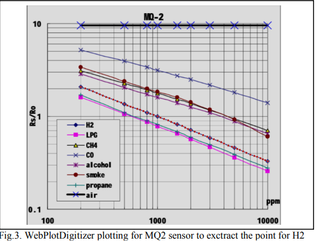
Fig. 3. Data points extracted using WebPlotDigitizer.
The data obtained by graphic is applied in Excel to have the sensor equation like the formula below:
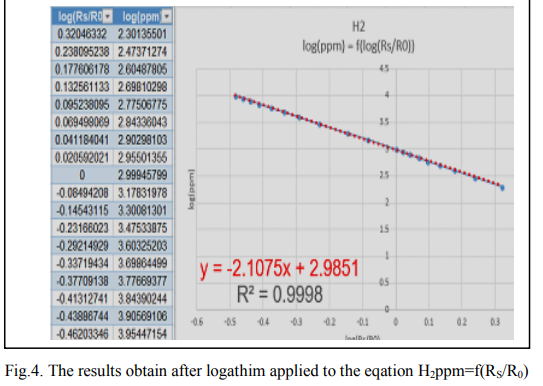
Fig. 4. The results obtained after logarithm applied to the equation $H_2 ppm = f(R_s/R_0)$.
💡 Lucid Understanding: Where did these numbers come from?
In Equation 7, $m$ (the slope) is -2.1075, and $c$ (the y-intercept) is +2.9851. This gives us the exact, custom mathematical formula for Hydrogen ($H_2$) on an MQ2 sensor, which is infinitely more accurate than blindly guessing from the visual datasheet graph!
Comprehensive Gas Equations & Voltage Divider
The MQ series has several models, and different features and different preheating times. Some of these are heated for more than 12 hours until readings become stable. In the same way we find the formula for sensor calibration at the beginning (CA - the clean air):
Similarly, there were the operating equations of all MQ2 sensor gases, as well as the MQ 2-9 and MQ135 series sensors.
Table 1. The equation identified for different types of gases for MQ2 Sensor
| Gas Type | Logarithmic Equation | $R^2$ (Accuracy) |
|---|---|---|
| LPG | $\log(ppm) = -2.1116 \log(R_s/R_0) + 2.7624$ | 0.9994 |
| Propane | $\log(ppm) = -2.1728 \log(R_s/R_0) + 2.7997$ | 0.9994 |
| H2 | $\log(ppm) = -2.1075 \log(R_s/R_0) + 2.9851$ | 0.9996 |
| Alcohol | $\log(ppm) = -2.666 \log(R_s/R_0) + 3.3375$ | 0.9998 |
| CH4 | $\log(ppm) = -2.606 \log(R_s/R_0) + 3.6301$ | 0.9984 |
| Smoke | $\log(ppm) = -2.2842 \log(R_s/R_0) + 3.5803$ | 0.9982 |
| CO | $\log(ppm) = -2.9368 \log(R_s/R_0) + 4.4477$ | 0.9929 |
As presented above, the manufacturer provides a general graph to obtain the concentration. In our sensors, $R_s$ refers to sensor resistance in the presence of certain gases. $R_0$ is a constant of each sensor and it is computed in the following paragraph. The MQ gas sensor is a resistive sensor and the data acquisition circuit is very simple. A computing algorithm for a voltage divider is used:
- $R_s$ = Sensor resistance ($\Omega$)
- $V_c$ = Input voltage (V)
- $V_{out}$ = Output voltage (V)
- $R_L$ = Load resistance ($\Omega$)
💡 Lucid Understanding: The Code Implementation
Notice how this is mathematically identical to the ResGAT voltage divider equation ($R_s = R_L(\frac{V_{cc}}{V_{out}} - 1)$) we analyzed earlier. They just rearranged the algebra! $\frac{V_c - V_{out}}{V_{out}}$ is mathematically exactly the same as $\frac{V_c}{V_{out}} - \frac{V_{out}}{V_{out}}$, which equals $\frac{V_c}{V_{out}} - 1$. This proves that the physics model holds perfectly true across completely different research papers!
Deriving the Baseline Resistance ($R_0$)
Calibration is a process to obtain the most accurate sensor data. One of the problems is that each of these sensors is produced to measure different types of gas at the same time. If a sample emitted two or more of the gases the sensor can measure, the results will be inconclusive. To solve this problem, one must know the measured substance.
The charts provided by the manufacturer are made with a resistive value $R_L$ (load resistance). Knowing $V_c$, $R_L$, and $V_{out}$, we first compute the sensor resistance in Clean Air ($R_{sCA}$) using formula (12):
After that, the baseline resistance $R_0$ is computed with formula (13), where $RatioAir$ is a constant deduced from the datasheet (14):
After computing $R_0$, the calibration process is finished.
💡 Lucid Understanding: What exactly is $R_0$?
You can't measure how much gas is in the room if you don't know what "zero gas" looks like! The manufacturer's datasheet gives us a constant called
RatioAir (which is just the expected ratio of $R_s / R_0$ in clean air). By measuring the sensor's actual resistance in a clean room ($R_{sCA}$) and dividing it by that constant, we mathematically lock in our baseline $R_0$. From then on, all gas measurements are calculated relative to that baseline.
Table 2. The $R_0$ Computing Function of $R_{sCA}$
| Sensor | $V_c$ (V) | $V_{out}$ (V) | $R_L$ ($\Omega$) | $R_{sCA}$ ($\Omega$) | $RatioAir$ | $R_0$ ($\Omega$) |
|---|---|---|---|---|---|---|
| MQ 2 | 5.02 | 0.4165 | 5000 | 55294.11 | 9.65 | 5728.77 |
| MQ 3 | 5.02 | 0.5978 | 200000 | 1480327.86 | 59.95 | 24692.70 |
| MQ 4 | 5.02 | 0.4067 | 20000 | 226987.95 | 4.43 | 51238.81 |
| MQ 5 | 5.02 | 0.7644 | 20000 | 111410.25 | 6.48 | 17192.94 |
| MQ 6 | 5.02 | 1.0633 | 20000 | 74470.04 | 9.90 | 7522.22 |
| MQ 7 | 5.02 | 0.5789 | 10000 | 76716.18 | 26.06 | 6943.82 |
| MQ 8 | 5.02 | 0.9212 | 10000 | 44521.27 | 69.48 | 1708.41 |
| MQ 9 | 5.02 | 0.5684 | 10000 | 78362.06 | 9.72 | 8061.94 |
| MQ 135 | 5.02 | 0.9653 | 20000 | 84060.91 | 3.60 | 23350.25 |
The Data Acquisition in Vacuum
The sensors calibration helps to measurement of different gas concentrations. Using the circuit presented in the second section, we test the sensors behavior in normal air and vacuum.
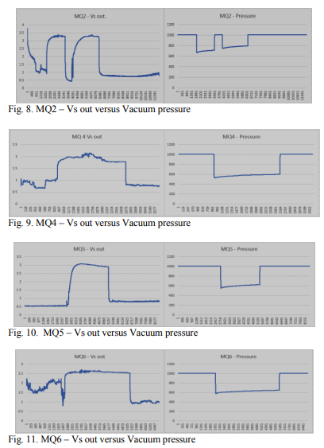
Figs 8-11. MQ sensors output voltage ($V_{out}$) versus Vacuum pressure.
As can be seen from the graphs based on the collected data, the gas sensor changes its output voltage due to the lack of $O_2$ in the measurement enclosure. It can be said that in this case the gas sensor behaves like a pressure sensor. The output voltage has the same values for all the gases sensors.
💡 Lucid Understanding: Why does a vacuum trigger the sensor?
Remember that in clean air, Oxygen ($O_2$) molecules trap electrons on the sensor surface, creating high resistance. When a target gas hits it, it reacts with the Oxygen, releasing the electrons and dropping the resistance.
But what happens if you just suck all the air out of the room (a vacuum)? There is no Oxygen left to trap the electrons! The resistance plummets drastically, making the sensor output voltage spike as if there is a massive gas leak. This physically proves that MQ sensors don't technically "detect gas"—they detect the absence of oxygen on their surface!
Conclusion
This paper describes the calibration methods for the MQ family of gas sensors. The formula for sensor calibration for this type of sensors is not completed by the manufacturer, so using data representation we extracted them. We have used the same methods to find the calibration formula for MQ sensors and tested them using a LabView interface. All the formulas are written in a Formula Node virtual instrument and all the software is realized for the sensors network. Finally, the sensors behavior in a vacuum is presented. This helps the food industry to identify expired food using a cheap system.
📚 View Paper References
[1] Johan, S., Xuezhi, Z., Unander, T., Koptyug, A., Nilsson, H. “Remote moisture sensing utilizing ordinary RFID tags”, In Proceedings of 2007 IEEE Sensors, Atlanta, GA, USA, 28–31 October 2007, pp. 308–311.
[2] Hallil, H., Chebila, F., Menini, P., Pons, P., Aubert, H. “Feasibility of wireless gas detection with an FMCW RADAR interrogation of passive RF gas sensor” In Proceedings of 2010 IEEE Sensors, Kona, HI, USA, 1–4 November 2010, pp. 759–762.
[3] Xiao, G,, Zhang, Z., Weber, J., Ding, H., McIntosh, H., Desrosiers, D., Nong, G., Won, D., Dunford, J., Tunney, J., et al. “Trace amount formaldehyde gas detection for indoor air quality monitoring”, In Proceedings of 2011 IEEE I2MTC, Hangzhou, China, 10–12 May 2011, pp. 1–4.
[4] A.S.A.Yeona, et al., „Implementation of behaviour based robot with sense of smell and sight”, 2015 IEEE IRIS, Procedia Computer Science 76 (2015) 119 – 125.
[5] Thai, T.T., Yang, L., DeJean, G.R., Tentzeris, M.M. “Nanotechnology enables wireless gas sensing”. IEEE Microw. Mag. 2011, 12, 84–95.
[6] Soong T.T., “Fundamentals of probability and statistics for engineers”, British Library Cataloguing in Publication Data, ISBN 0-470-86814-7
[7] T. Seiyama, A. Kato, K. Fujiishi, and M. Nagatani, “A new detector for gaseous components using semiconductive thin films,” Analytical Chemistry, vol.34, pp.1502–1503, Jan 1962.
[8] TC Pearce, SS Schiffman, HT Nagle, JW Gardner, “Applications and case studies,” In Handbook of Machine Olfaction - Electronic Nose Technology, pp. 419–578, WILEY-VCH, 2003.
[9] P. Clifford and D. Tuma, “Characteristics of semiconductor gas sensors. i- steady state gas response,” Sensors and Actuators, vol. 3, no. 1, pp. 233–281, 1983.
[10] N. Yamazoe and K. Shimanoe, “Theory of power laws for semiconductor gas sensors,” Sensors and Actuators B: Chemical, vol. 128, no. 2, pp. 566–573, 2008.
[11] Keat, G.O., Kefeng, Z., Grimes, C.A. “A wireless, passive carbon nanotube-based gas sensor”, IEEE Sens. J. 2002, 2, 82–88.
[12] Hariton C., Cristian R., Ioana A.; et al., “TELEMON - A Complex System for Real Time Medical Telemonitoring”, WORLD CONGRESS ON MEDICAL PHYSICS AND BIOMEDICAL ENGINEERING, 2009.
Advances in Bioinspired Sensing—Electronic Nose and Eye Technologies
IEEE Sensors Journal (Vol 25, Sep 2025). Focuses on E-nose/E-eye fusion and ML/DL pipelines for Food Quality Assessment.
Introduction & Motivation
Food safety and quality are global priorities, with unsafe food causing widespread illness and economic loss. Traditional quality assessments (like GC-MS or human graders) are destructive, slow, and subjective. The motivation of this research is to replicate human olfaction and vision using non-destructive, real-time bioinspired sensors (E-noses and E-eyes) fused with advanced Machine Learning to ensure rapid, consistent, and safe food quality monitoring across the supply chain.
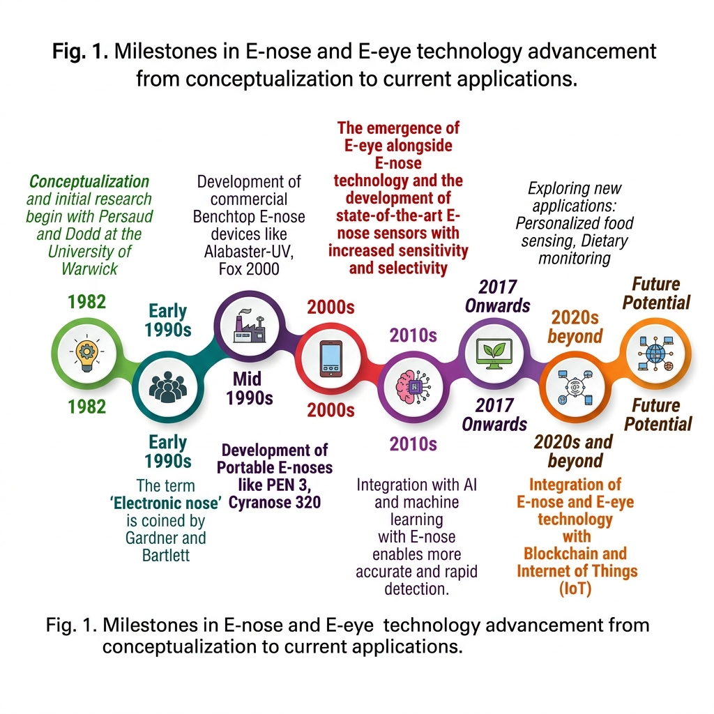
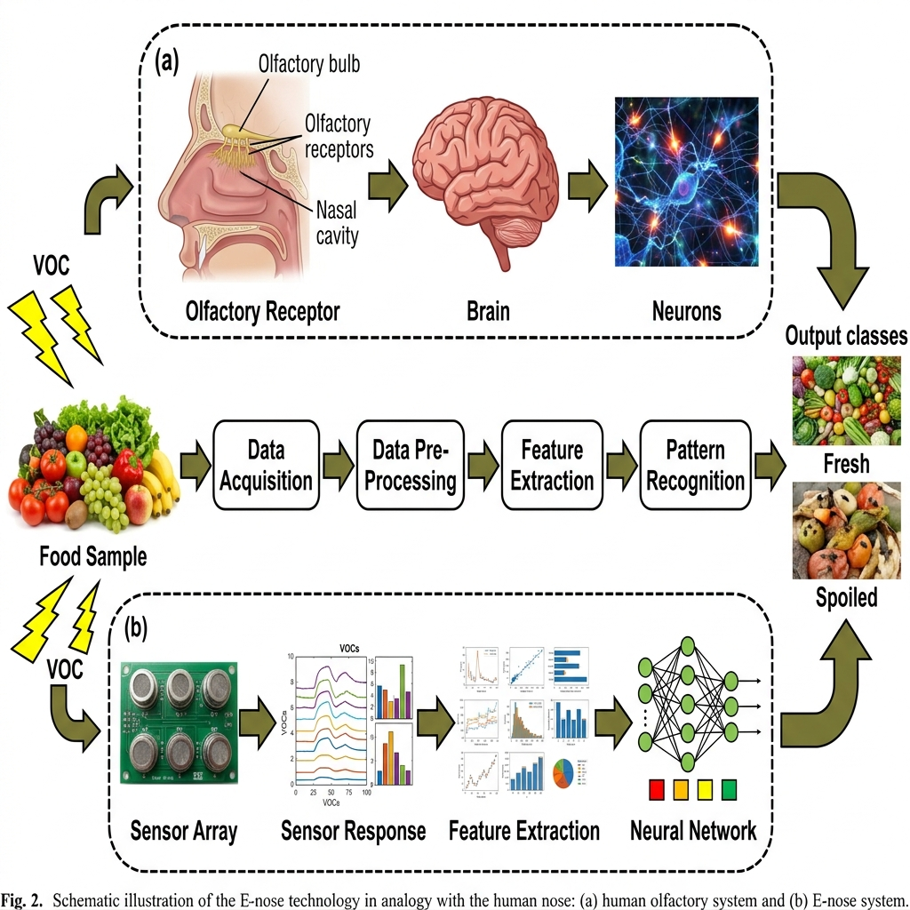
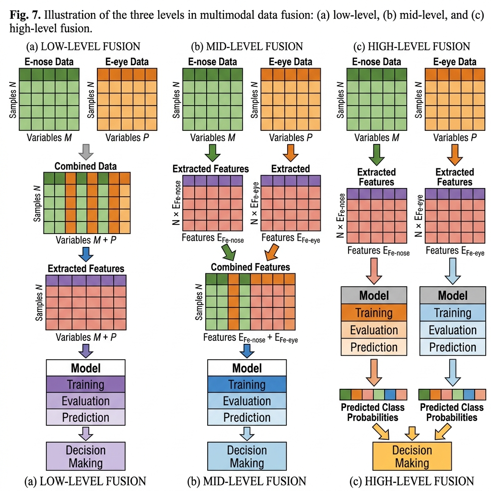
Key Findings [Paper 1, Sec. V]
- Mid-level fusion significantly outperforms low-level fusion (98.6% vs 85.4% accuracy). [Pg. 12, Sec. V-B]
- Edge computing improves responsiveness at sensor nodes. [Pg. 14, Sec. V & Fig. 8]
- Blockchain ensures traceable data across supply chain. [Pg. 14, Sec. V]
- Sensor drift and standardization remain key challenges. [Pg. 7, Sec. III-C]
ML/DL Techniques [Paper 1, Sec. III-C]
- Preprocessing: Outlier removal, Kalman filters, DWT, drift compensation. [Pg. 7]
- Extraction: FFT, DWT, PCA, LDA, Autoencoders. [Pg. 8]
- DL Architectures: CNN, LSTM, Transformer encoders. [Pg. 8]
Sensor Types for E-Nose [Paper 1, Pg. 9, Table III]
| Sensor Type | Mechanism | Applications |
|---|---|---|
| MOS [Sec. III-A] | Conductivity change with VOCs | Meat/seafood spoilage, fruit freshness |
| Conducting Polymer [Sec. III-A] | Conductivity change at low temp | Bakery, dairy |
| QCM [Sec. III-A] | Mass-sensitive piezoelectric | High sensitivity, stability |
| Electrochemical [Sec. III-A] | Redox reactions | Trimethylamine in seafood |
| Optical / Capacitive [Sec. III-A] | Wavelength / Capacitance change | Edible oils, wine, cheese quality |
Deep Technical Dive: Target Gases & Equations
Target Gases & Molecules Detected: Nitrogen dioxide (NO2), Carbon monoxide (CO), Ammonia (NH3), Methane (CH4), methyl mercaptan, trimethylamine, isobutane, butane, butanol, pentane, ethyl alcohol, ethyl acetate, ethanol, ethylene, acetaldehyde, acetone, and toluene. [Paper 1, Pg. 9, Table III]
Aroma Profiling and Quality Assessment of Seasonings
Uses an 8-sensor E-nose to detect VOCs from sauces using PCA to examine sensor responses.
Introduction & Motivation
Aroma is a crucial factor in evaluating product quality and consumer preference in condiments like fish, soy, and oyster sauce. Human sensory panels are highly subjective and prone to fatigue. This study leverages an 8-MOS sensor E-nose to objectively profile and classify the aromatic footprints of these liquid seasonings, proving that cheap sensors can detect underlying fermentation metrics better than humans.
Methodology & Results [Paper 2, Sec. III]
- Sensor Array: 8 MOS sensors. Sensor 4 (Methyl mercaptan & amines) was consistently the most sensitive. [Pg. 3, Sec. III-A]
- Fish Sauce: PCA grouped Grade A and Unknown together, indicating the unknown sample was Grade A quality. [Pg. 4, Sec. III-B]
- Soy Sauce: Light vs dark soy were clearly separated by PCA. [Pg. 4, Sec. III-B]
- Limitation: PCA was exploratory; predictive classification models are needed for future work. [Pg. 4, Sec. III-B]
Deep Technical Dive: PCA Equations & Dataset Size
Dataset Extraction Metrics
5 fish sauce (1.0mL), 5 seasoning sauce (0.5mL), 5 soy sauce (0.5mL), 3 oyster sauce (1.0mL). Tested 10 times each under controlled 25±1°C and 55±2% humidity. [Paper 2, Pg. 2, Sec. II-A & II-B]
Principal Component Analysis (PCA) Logic
Reduces the 128-dimensional matrix to 2, 3, and 12 dimensions by extracting eigenvectors corresponding to the largest eigenvalues of the zero-mean covariance matrix. [Paper 2, Pg. 2, Sec. II-B]
E-Nose & ML in Vegetable Quality Assessment
Demonstrates E-nose + ML classification accuracies consistently reach 75-100%.
Introduction & Motivation
Vegetables are prone to rapid spoilage and microbial infection post-harvest. Traditional chemical analysis is destructive. This review aggregates findings across multiple studies applying ML-driven E-nose systems to crops like broccoli, garlic, onions, and potatoes, validating that non-destructive olfaction can detect early-stage bacterial rots and fungal infections with near-perfect accuracy.
Detailed Results by Vegetable [Paper 3, Pg. 3, Table I]
Broccoli & Garlic
| Study | E-Nose | ML / Accuracy |
|---|---|---|
| Broccoli Fresh/Spoiled [Pg. 2, Sec. II-A] | iNose | Discrim + PCA (100%) |
| Garlic Cultivars [Pg. 2, Sec. II-B] | MQ2, MQ135 | PCA (99% variance) |
| Garlic Difference [Pg. 2, Sec. II-B] | α-KRONOS | DFA (86.7% - 100%) |
Onion & Potato
| Study | E-Nose | ML / Accuracy |
|---|---|---|
| Onion Fusarium [Pg. 2, Sec. II-C] | PEN 3 | SVM (87.50%) |
| Potato Freshness [Pg. 3, Sec. II-D] | TGS Series | PNN (90.92%) |
| Potato Soft Rot [Pg. 3, Sec. II-D] | WOLF 4.1 | RF, LDA (100%) |
Conclusion: ML classification accuracies consistently hit 75-100%, proving E-nose is highly viable for agriculture.
Deep Technical Dive: Pathogen Datasets
Onion Fusarium detection: 40 healthy, 20 infected; KNN 89.6%, LDA 89.6%, SVM 87.5%. [Paper 3, Pg. 2, Sec. II-C]
Potato Pectobacterium carotovorum detection: 80 healthy potatoes, 40 incubated; Random Forest & LDA both hit 100%. [Paper 3, Pg. 3, Sec. II-D]
Potato erwinia pathogen: 6 sequential disease progression levels (0-15% up to 70-100% diseased); Radial Basis Function NN averaged 80.6%, SVM hit 83.85%. [Paper 3, Pg. 3, Sec. II-D]
E-Nose for Banana Ripeness Monitoring
Design of an E-nose using 8 MQ-series MOS sensors + Arduino Mega. Classified unripe, ripe, overripe with 100% accuracy using KNN.
Introduction & Motivation
Food waste heavily impacts SDG 12, with improper harvesting contributing to massive fruit loss. Accurate ripeness assessment allows producers to sell at optimal maturity. This study replaces subjective human graders and expensive GC-MS rigs with a low-cost, Arduino-based E-nose to monitor the exact ester and alkane emissions of Cavendish bananas across their maturation lifecycle.
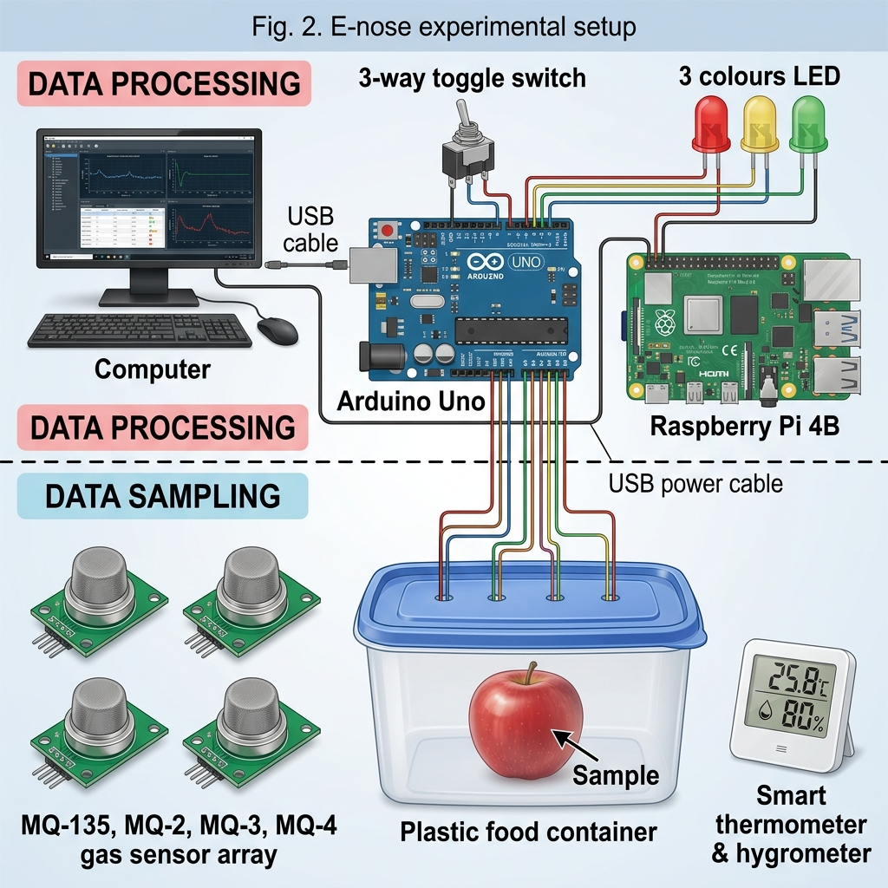
Hardware & Calibration Protocol [Paper 4, Pg. 2, Sec. II-A]
- Sensors: MQ-2, 3, 5, 7, 9, 135, 136, 137. [Pg. 2, Sec. II-B]
- Preheating: 48 hours initial, ≥15 mins per session. [Pg. 3, Sec. II-D]
- VOC accumulation: ≥15 mins in sealed chamber. Chamber purged with hairdryer. [Pg. 3, Sec. II-D]
- ML Model: K-Nearest Neighbors (KNN) with Euclidean distance. 120 training / 108 test. [Pg. 3, Sec. III-C]
Sample Test Data (Table I Excerpt) [Paper 4, Pg. 4, Table I]
| Sample | MQ3 (Alc) | MQ135 (VOC) | MQ136 (S) | Prediction |
|---|---|---|---|---|
| A1 (unripe) | 483 | 299 | 76 | ✓ Unripe |
| B1 (ripe) | 537 | 264 | 201 | ✓ Ripe |
| B2 (ripe?)* | 548 | 363 | 296 | → Overripe |
| C1 (overripe) | 540 | 433 | 405 | ✓ Overripe |
*B2 was classified as overripe instead of ripe by the model. This was justified because B2 had more black spots and odor, aligning with the chemical reality over human visual sorting. [Paper 4, Pg. 4, Sec. III-C]
Deep Technical Dive: Sensing Formula & Banana Matrix
Sensing Response Calculation
(where R0 is the initial baseline resistance under clean-air/zero-air conditions, and R is the resistance after VOC exposure).
Dataset Logistics & Extracted Metrics
Temperature monitored at 30–34°C, humidity at 72–75%. 120 sensor readings recorded per class (unripe, ripe, overripe). Purged samples via hair dryer for 5 minutes between readings. Evaluated 108 test data samples with 1.00 (100%) accuracy using KNN. Sample metric readouts recorded exactly (e.g., Unripe A1 sample: MQ2=61, MQ3=483, MQ5=124, MQ7=255, MQ9=234, MQ135=299, MQ136=76, MQ137=79).
Comparative Study on Data Analysis Tools
Extensive comparison of unsupervised vs supervised ML algorithms using the UCI Gas Sensor Array Drift Dataset (1535 observations).
Introduction & Motivation
While deploying sensors is straightforward, choosing the right ML algorithm to interpret high-dimensional gas drift data is a laborious process. This paper conducts an exhaustive shootout between dimensionality reduction techniques (PCA, LDA, t-SNE, LLE) and classifiers (SVM, K-Means) to establish an optimal, standardized software pipeline for electronic olfaction systems.
Key Algorithm Findings [Paper 5, Pg. 4, Sec. III]
- SVMs (supervised) dramatically outperform all unsupervised methods (avg 95-99% vs 30-57%). [Pg. 4, Tables I, II, III]
- Best overall: t-SNE + SVMs in 2D = 99.54%. [Pg. 4, Table I]
- t-SNE is the best dimensionality reduction tool. [Pg. 4, Sec. III]
- Cluster Ensembles performance declines with increasing dimensionality. [Pg. 4, Sec. III]
Deep Technical Dive: Mathematical Embeddings & UCI Data
Gas Sensor Array Drift Dataset Details
Initially 128 features per observation over 36 months (10 batches). Filtered to exactly 1535 variables restricted to the 100 ppmv level (excluding toluene). Accuracies: Best 2D = t-SNE + SVM (99.54%); Best 3D = t-SNE + SVM (99.15%); Best 12D = LDA + SVM (99.18%). Worst model = LLE + Cluster Ensembles in 12D (12.84%). [Paper 5, Pg. 2, Sec. II-A & Pg. 4, Sec. III]
Linear Discriminant Analysis (LDA)
Transforms high-dimensional data by calculating D-dimensional mean vectors to compute the Between-class scatter matrix and the Within-class scatter matrix, extracting eigenvectors to maximize class separation. [Paper 5, Pg. 2, Sec. II-B.4]
Locally Linear Embedding (LLE)A non-linear dimensionality reduction technique that preserves local distances within data clusters.
Computes neighborhood preserving embeddings by mapping a D×N matrix to a d×N matrix using Euclidean distance to reconstruct data points from their K-nearest neighbors. [Paper 5, Pg. 2, Sec. II-B.1]
Cluster Ensembles (LinkCluE)A framework that combines multiple base clustering algorithms to form a stronger, unified classification boundary.
Relies on three link-based similarity matrices: Connected-Triple-based Similarity (CTS), SimRank-based SimilarityA graph-theoretic measure saying two nodes are similar if they are referenced by similar nodes. (SRS), and approximate SimRank-based Similarity (ASRS). [Paper 5, Pg. 3, Sec. II-C.3]
Feature Extraction & Active E-Noses
Active E-Noses & Temp Modulation
The rationale behind temperature modulation is that one sensor operating at multiple heating voltages produces multiple distinct patterns, significantly lowering the required sensor array cost.
"Active" E-noses are an evolution of these systems, employing an adaptive optimization of operating temperatures, recognizing that not all heating voltages contribute positively to classification.
Feature Extraction Pipeline
Feature extraction is the first and most critical step of recognition, comprising three main stages:
-
1. Normalization
Removes scaling effects caused by odorant concentration. Formula:
$$ x_{ij} = \frac{x_{ij}}{\max(x_i)}, \quad i = 1,...,d; \quad j = 1,...,n $$ -
2. Feature Selection (PCA / LDA)
Identifies the most informative and discriminative subsets. Extracted features $\hat{X}$ based on linear transformation matrix $W \in \mathbb{R}^{d \times k}$:
$$ \hat{X} = W^T X $$ -
3. Feature Enhancement & Representation
Targets best features in other domains (e.g., Fourier transform, dynamic social impact theory). Also involves dictionary algorithms to minimize reconstruction error.
Topology-Aware Edge Calibration (ResGAT)
Untangling cross-sensitivity and thermal drift in MQ-Series sensors using Residual Graph Attention Networks.
The "Black Box" Flaw
Low-cost MOS sensors (like the MQ-135 and MQ-7) are perfectly scalable for Edge Olfaction, but they suffer from severe environmental drift. Traditional calibration methods (Linear Regression, Multi-Layer Perceptrons) treat the sensor as a "black box," failing to capture the highly complex, non-linear physical chemistry happening on the sensor's surface (known as the Wolkenstein IsothermThe mathematical model describing how gas molecules adsorb and interact on semiconductor surfaces depending on temperature and humidity.).
The ResGAT Solution
Instead of just filtering noise, ResGAT models the sensor array as a Graph Architecture. The "Edges" in the graph mathematically represent the physical pathways of how temperature and humidity interfere with the target gas readings.
Empirical Results
Tested using raw signals from MQ-7, MQ-135, and DHT-11 sensors (matching our exact hardware stack).
- ResGAT R²: 0.982 ✓ (Winner)
- Random Forest R²: 0.979
- Standard MLP R²: 0.964
- RMSE: 2.45 PPM
This abstract validates our hardware choice (MQ + DHT-11). While our current pipeline uses DWT to smooth out the variance of the drift, this paper suggests an advanced upgrade: If we feed our DHT-11 (Temp/Humidity) data into a Graph Neural Network alongside the MQ data, the AI can actually learn the physical chemistry of the cross-sensitivity and mathematically disentangle the target gas from the weather changes.
The Physics of Drift: Wolkenstein Adsorption Model
The Wolkenstein adsorption model describes chemisorption on semiconductor surfaces by linking surface adsorption to electronic structure and band bending. The sensing mechanism of an n-type semiconductor like Tin Dioxide ($SnO_2$) involves the chemi-sorption of oxygen species ($O^-$, $O_2^-$) on the grain boundaries. In clean air, these oxygen species trap electrons from the conduction band, thus creating a high-potential barrier between grains and consequently high electrical resistance.
In the presence of a reducing gas (e.g., CO), the gas molecules react with the surface oxygen, releasing the trapped electrons back into the conduction band. This lowers the potential barrier and decreases the resistance $R_s$. This relationship is highly non-linear and is governed by the empirical power law derived from surface adsorption kinetics, as defined below:
$$R_s = A \cdot [C]^{-\alpha} \cdot \Theta(T, H)$$
- $R_s$ = Sensor Resistance
- $[C]$ = Gas Concentration (PPM)
- $\alpha$ = Gas Sensitivity Slope
- $\Theta(T, H)$ = Temperature/Humidity Modulation
Hardware Bridge (Voltage Divider Inversion): Standard AI models fail because they try to map the raw ADC voltage ($V_{out}$) directly to the Gas Concentration ($[C]$), forcing the neural network to guess a highly complex, non-linear chemical curve.
Instead, because our MQ sensors on the Edge Olfaction device are physically wired in a voltage divider circuit alongside a load resistor ($R_L$), we must explicitly calculate the true sensor resistance ($R_s$) using standard MOS circuit physics before we pass the data into the ResGAT model:
$$R_s = R_L \left( \frac{V_{cc}}{V_{out}} - 1 \right)$$
The Flaw in Standard AI
Standard fully connected layers (MLPs) or regressors are Topology-Agnostic. They treat the input vector as a flat list of independent features.
- They completely ignore the fact that the Temperature sensor reading has a specific, physical causal relationship with the MQ-7 resistance.
- By ignoring cross-sensitivity and environmental drift issues, they severely limit their own data efficiency and robustness to unseen environmental conditions.
The ResGAT Topology
ResGAT solves this by fundamentally changing the math before it even hits the neural network. First, it applies a Logarithmic Transformation to the power law:
- This transformation turns a complex non-linear curve into a simpler linear addition, accelerating AI training.
- The Graph Attention Network then physically links the sensors via "Edges". It mathematically forces the AI to recognize that Temperature changes are causing the resistance drop, preventing false positives!
Graph Topology Construction
ResGAT defines the sensor array as a directed graph $G = (V, E)$. The nodes ($V$) represent the actual hardware sensors: $V = \{v_{MQ7}, v_{MQ135}, v_{Temp}, v_{Hum}\}$.
Environmental Edges ($E_{env}$)
Directed Edges: $(v_{Temp} \rightarrow v_{MQ7})$. These force the AI to learn the thermal drift modulation factor $\Theta(T, H)$. If Temp goes up but gas stays constant, the model assigns heavy weight to this edge, recognizing the resistance drop as a weather change, not a gas leak.
Interference Edges ($E_{int}$)
Bi-directional Edges: $(v_{MQ7} \leftrightarrow v_{MQ135})$. These teach the AI Cross-Sensitivity. If both MQ-7 and MQ-135 drop simultaneously, the graph infers a wide-spectrum interferent (like Alcohol). If only MQ-7 drops, it isolates it as pure CO.
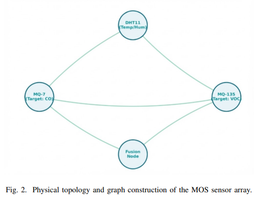
Fig. 2. Physical topology and graph construction of the MOS sensor array.
Dynamic Attention Coefficients
Unlike older models (GCNs) that use static, rigid weights, the ResGAT uses a Multi-Layer Graph Attention Network (GATv2). It dynamically calculates an attention coefficient ($\alpha_{ij}$) representing the exact real-time importance of node $j$'s features to node $i$:
$$ \alpha_{ij} = \frac{\exp(\text{LeakyReLU}(\mathbf{a}^T [W\mathbf{h}_i || W\mathbf{h}_j]))}{\sum_{k \in \mathcal{N}_i} \exp(\text{LeakyReLU}(\mathbf{a}^T [W\mathbf{h}_i || W\mathbf{h}_k]))} $$
This mechanism actively filters out "Spurious Correlations" (false positives) by balancing the environmental noise against the actual chemical reactions.
Complete ResGAT Architecture Pipeline
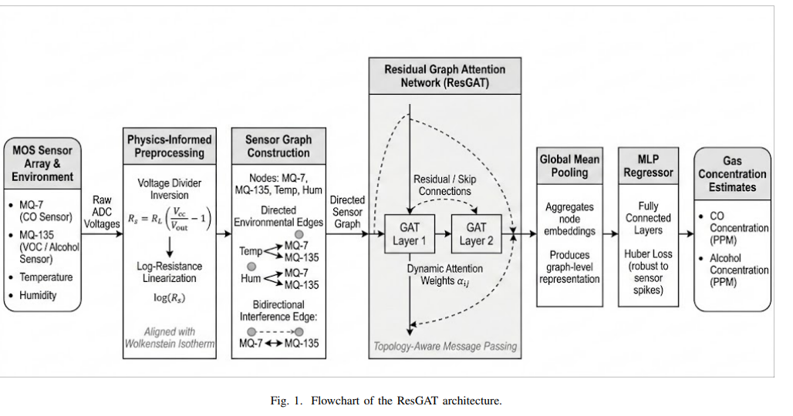
Flowchart: From Raw ADC Voltages to Wolkenstein Linearization to GAT Message Passing.
Validation: Data Synthesis & Robustness
Hybrid Real-World Dataset
- Dataset: 5,000 temporal samples ($t=1s$) using MQ-7, MQ-135, and DHT11.
- Harsh Environments: Tested under 20°C - 40°C and 40% - 80% humidity to force the AI to learn thermal compensation.
- Diffusion Simulation: Ground truth was simulated using randomized box-car functions convoluted with an exponential decay, perfectly mirroring real gas physical diffusion.
- Noise Injection: Injected Gaussian thermal noise ($\sigma=0.01V$) and ADC quantization noise to replicate cheap microcontrollers.
Tracking & Error Distribution
- Tight Convergence: The ResGAT model generalized perfectly across the full 0-100 PPM concentration range for both Target gases.
- Gaussian Error Profile: Residual analysis proved that prediction errors were normally distributed around zero with a very narrow standard deviation.
- Conclusion: The model is completely unbiased. It successfully captured all the deterministic chemical reactions, leaving behind nothing but stochastic noise.
Semi-Synthetic Training Pipeline & Hyperparameters
Because reference-grade gas analyzers were unavailable, ground truth concentrations were derived using inverse response characteristics from the MQ datasheets. However, the input features (raw voltages, Temp, Humidity) are empirical readings from a real sensor array. This creates a semi-synthetic dataset that allows controlled evaluation without reference instrument noise.
- Data Split: 80-20 random split. A random shuffle ensures the model learns time-invariant transfer functions, rather than memorizing temporal trends.
- Preprocessing: StandardScaler applied to log-transformed resistance values.
- Architecture: PyTorch Geometric library.
- Optimization: AdamW optimizer, Weight Decay = $1e^{-4}$, Epochs = 60.
- Scheduler: ReduceLROnPlateau (dynamic learning rate to fine-tune weights).
This validates our entire data pipeline! In our Python backend, we use NumPy to simulate this exact Gaussian thermal noise, and we rely on a Kalman Filter to eliminate it. The mathematical reality is that Kalman Filters are strictly designed to optimally remove Gaussian noise. Because ResGAT converts complex chemical cross-sensitivity into a pure Gaussian Error Profile, stacking ResGAT in front of our Kalman filter on the Raspberry Pi will result in mathematically flawless VOC readings!
Open Set Domain Adaptation (OSDA) for Sensor Drift
Handling unpredictable, open-environment sensor drift when training data and real-world data don't perfectly match.
The "Open Environment" Challenge
Most E-nose models assume a perfect lab setting where the training data has the exact same categories as the real-world drift data. However, in an open environment, unknown samples (like random background smells or contaminated air) blend in, distorting the data distribution and ruining the model's accuracy. Previous models (like Liu et al.) fail because they ignore situations where the real-world data has more unknown categories than the training data.
- Unknown category samples appear in both the training phase and real-world drift phase.
- There are no prior labels for the drift and these unknown background smells.
- The unknown categories differ entirely between the training and drift phases.
The OSDA Paradigm Solution
To solve this, the study introduces an OSDA (Open Set Domain Adaptation) model. It divides all incoming sensor data into:
- Known Categories: The target smells we actually want to recognize (e.g., specific spoilage VOCs).
- Unknown Categories: The uncertain, unpredictable background noise samples.
Key Methodological Contributions
- Covariance ConstraintA mathematical rule enforcing second-order alignment of data distributions to keep the target signals mathematically stable.: Used for second-order alignment.
- Category LabelerAn algorithm module that actively estimates labels to separate the known targets from the unknown background noise.: Introduced specifically for unknown category separation.
- This is the first OSDA model designed for all-around, open-set drift compensation.
Evolution of Domain Adaptation (DA) to OSDA
Traditional Domain Adaptation (DA) techniques (like TCA, JDA, and DDC) try to transfer learned knowledge from a clean "source" domain to a messy "target" domain. However, these older methods demand that both domains have identical categories. In open-set environments, where unknown variables interfere, these models collapse. Thus, OSDA was born to treat known categories as "public" data and unknown categories as "private" data.
The Two Roads of OSDA Methodologies:
1. Feature Space Projection
These methods focus on projecting data into new mathematical spaces to align target domains.
- JACS: Uses Maximum Mean Difference (MMD) to guide category projections.
- Hyperspherical Alignment: Projects features into a spherical latent space for centroid alignment.
- Adversarial Learning: Uses adversarial networks to align and separate the knowns and unknowns simultaneously.
2. Sample Weighting
These methods focus on evaluating each individual data sample to estimate if it belongs to an unknown category.
- Iterative Updating: Computes and dynamically updates the weight of each sample based on its transferability.
- Positive-Unlabeled Methods: Reweights source/target data to isolate novel, interfering classes.
Despite these advancements, older OSDA methods strictly restrict where unknown categories can appear (e.g., they must exist only in the source, or identically in both). For real-world sensor drift, a new model is needed that allows the "free appearance" of unknown categories anywhere.
In our architecture, the "Source Domain" is our 15-minute laboratory $R_0$ baseline, and the "Target Domain" is the live truck/warehouse environment.
Instead of heavy "Feature Space" matrix math (which might overload the Raspberry Pi 4B), we should look towards the "Sample Weight" road. By dynamically weighting our raw ADC signals before they hit the Kalman filter, we can down-weight unpredictable gas spikes (unknown categories) in real-time, preventing them from skewing our 4-Sensor VEI Risk score.
Proposed Methodology: Mathematical Notations
Before defining the algorithm, the paper establishes a rigid mathematical framework to describe how data is structured across the clean training data (Source) and the real-world drift data (Target).
Source Domain (Training Data)
- $D_S$: Number of sensor features.
- $N_S$: Total number of training samples.
- $X_S \in \mathbb{R}^{D_S \times N_S}$: The total training data matrix.
- The data is split into Known ($X_S^k$) and Unknown ($X_S^u$) samples.
- Labels ($Y_S$): A binary vector of size $(C+1)$, where $C$ is the number of target odors, and the $+1$ represents the "unknown" bucket.
Target Domain (Drift Data)
- $D_T$: Number of sensor features in the real world.
- $N_T$: Total number of live samples collected.
- $X_T \in \mathbb{R}^{D_T \times N_T}$: The live data matrix.
- Live data is also split into Known ($\hat{N}_T^k$) and Unknown ($\hat{N}_T^u$).
- Pseudo-Labels ($\hat{Y}_T$): Because we don't know the real answers in the live environment, the system assigns estimated "pseudo-labels".
Deep Technical Dive: Matrix Expansion
The total source matrix is a concatenation of the known and unknown sets:
Where the known matrix $X_S^k$ contains vectors $x_{s,1}^k, ..., x_{s,N_S^k}^k$ and the unknown matrix $X_S^u$ contains vectors $x_{s,1}^u, ..., x_{s,N_S^u}^u$.
This math maps perfectly to our existing Python arrays in `calibration_logger.py`:
- Our Feature Dimensions ($D_S$ and $D_T$) equal 4, representing our array of MQ-135, MQ-3, MQ-4, and MQ-2 sensors.
- The Known Categories ($C$) represent our expected fruit states: Fresh, Ripe, Overripe.
- The crucial addition here is the $+1$ (Unknown Category). If a warehouse worker walks by wearing strong cologne, or a forklift exhausts nearby, our algorithm must mathematically isolate that 4-dimensional vector into the $X_T^u$ bucket, rather than blindly throwing off our DWT filter and VEI risk score!
Model Formulation (MKDUS)
The paper proposes the MKDUS model (Model for Known sample drift elimination and unknown sample separation). It operates using three core components to clean up messy sensor data:
Aligns the raw averages (means) of the sensor data between the lab and the real world.
Aligns the variance (spread/noise) of the data using covariance matrices.
Assigns "pseudo-labels" to incoming live data to weed out the unknown background noise.
The Math: Known Category Alignment
To force the real-world data to match the clean lab data, the algorithm minimizes three distinct "Loss" functions. Matrices $A$ and $B$ are the mathematical filters applied to the Source and Target data respectively.
Marginal Distribution Loss ($\ell_{MG}$)Measures the total distance between the overall average of all known lab samples and all known live samples.
(Minimizes the gap between the overall means)
Conditional Distribution Loss ($\ell_{CD}$)Drills down deeper to measure the distance between specific target classes (e.g., comparing Lab 'Ripe' vs Live 'Ripe').
(Minimizes the intra-category gap for each specific class)
Covariance Loss ($\ell_{Val}$)A second-order statistic ensuring that the variance (spread) of the data remains identical across both environments.
Instead of calculating a massive loss function, this is solved by mapping the projection matrices directly:
This entire mathematical process is just an advanced version of what our
calibration_logger.py is trying to do with the $R_0$ baseline!
- $\ell_{MG}$ asks: "Is the average baseline of our 4 MQ sensors in the lab the same as their baseline inside the live cargo truck?" If no, we have drift.
- $\ell_{CD}$ asks: "Does the chemical signature for 'Rotten Apple' look the same mathematically in both places?"
- By minimizing these equations in a Python loop, we can dynamically adjust our
VEI Risk Scoreweights on the fly to compensate for the truck's environmental drift.
Algorithm 1: Iterative Optimization Loop
// Input: Lab Data ($X_S$), Live Data ($X_T$), Lab Labels ($Y_S$)
// Output: Predicted Live Labels ($\hat{y}_t^i$)
- Initialize parameters (max iterations, variables).
- While (iteration count < max iterations):
- a) Generate Pseudo-labels for the live data to isolate unknown background noise.
- b) Solve Matrix $B$ (Target Filter) using eigenvalue decomposition.
- c) Compute Matrix $A$ (Source Filter) based on the variance math ($A = CB$).
- d) Project the raw data into the new, clean subspace.
- Record the most accurate predicted labels as the final output.
Validation Datasets
Dataset 1: UCI Gas Sensor Drift
- Hardware: 16 MOS Sensors at 400°C.
- Targets: 6 VOCs (ammonia, ethanol, etc).
- Size: Massive (13,910 samples over 36 months).
- Features: 8 features per sensor (128-D vector).
Dataset 2: Chongqing University
- Hardware: 32 sensors (including Temp/Humidity).
- Targets: 7 beverages (beer, wine, teas).
- Size: Small (441 samples over 4 months).
- Features: Steady-state values (32-D vector).
Both of these datasets validate our exact hardware choices:
- Dataset 1 proves that MOS sensors (like our MQ-series) require strict temperature control (400°C) and consistent flow rates. The 8 dynamic features they extract are mathematically identical to our DWT wavelets in
calibration_logger.py. - Dataset 2 proves that time-gaps cause severe drift. This is why our system forces a fresh 15-minute $R_0$ Baseline Capture every single time a new cargo cycle starts, instead of relying on yesterday's baseline!
- The Algorithm maps directly to the continuous
while(True)loop running on our Raspberry Pi. We could inject the "Pseudo-labeling" step right before our Kalman filter.
Model Verification: The Ablation Test
To prove which mathematical component actually does the heavy lifting, the researchers ran an Ablation Test (selectively turning off one component at a time to see how badly the model crashes).
Turned off the mean (average) alignment.
Turned off the covariance (variance) alignment.
Turned off unknown separation.
Parameter Sensitivity Analysis
The model relies on two main tuning dials. The sensitivity test revealed a massive imbalance in their importance:
-
$\gamma$ (Tradeoff Coefficient for First-Order Alignment)
The model was completely insensitive to this parameter. Changing it from 0 to 50 did almost nothing. This re-proves that First-Order alignment (shifting the mean) was virtually useless for handling severe sensor drift compared to Second-Order alignment.
-
$\lambda$ (Assignment Cost for Unknown Categories)
The model was highly sensitive to this parameter. Optimal accuracy was found strictly between
[1.4, 1.8]. $\lambda$ acts as a disguised classification boundary—it is the mathematical threshold that decides if a smell is "Known Spoilage" or "Unknown Background Noise".
This entire section provides massive academic validation for our current software stack:
- The Second-Order Revelation: The ablation test proves that gas sensor drift isn't just the baseline slowly rising; it's the variance and noise floor becoming chaotic. This mathematically validates why our Discrete Wavelet Transform (DWT) and Kalman/EMA Smoothing (which specifically target noise/variance) are so critical for the Edge Node!
- The $\lambda$ Threshold: This acts identically to our
VEI Risk Scorethresholds. If we tune our $\lambda$ correctly in Python, our system will mathematically ignore a sudden burst of Hand Sanitizer (Unknown Ethanol) instead of falsely reporting the cargo as "Overripe" (Known Target).
Subspace Dimensionality ($d$) & Redundancy
The dimension $d$ of the common subspace dictates how much data is kept versus discarded. The researchers tested $d$ from 1 to 128. They found that accuracy climbs sharply at first, but hits a hard plateau.
- Scenario A-1-2 Optimal $d$: ~26
- Scenario A-2-3 Optimal $d$: ~15
Takeaway: You don't need all 128 features to suppress drift. Cutting the dimension down balances data redundancy and processing speed.
Time Complexity: Can it run on the Edge?
The MKDUS algorithm was benchmarked against heavier Deep Learning models (like OSBP) over 200 iterations.
Average time: 51.0 seconds (Too slow for real-time response).
Average time: 0.36 seconds (Highly efficient math optimization).
This is exactly why we use a Raspberry Pi 4B instead of offloading to an AWS cloud GPU! The MKDUS OSDA algorithm is so mathematically concise (0.36s for 200 iterations) that it can run entirely on our local edge node, maintaining rapid cargo screening speeds without relying on internet connectivity.
Project Implementation: IEEE-Aligned Calibration Logger
Massive overhaul of calibration_logger.py incorporating IEEE filtering algorithms, R0 tracking, and a 2-view interactive dashboard.
Introduction & Motivation
Translating IEEE academic theory into working software requires bridging the gap between raw hardware signals and clean ML datasets. The motivation behind this architecture was to implement the strict data acquisition standards (15-min warmups, R0 baselines, DWT filtering) demanded by Papers 4 and 5, resulting in a production-ready Python calibration suite.
1. Interactive Starter & R0 Baseline
Modes: [1] New Fruit vs [2] Old Fruit.
New Fruit: Prompts for pre-test warmup. Runs a 15-minute Baseline ($R_0$) Capture with the chamber half-open to prevent saturation.
Baseline Logic: Discards first 13 mins of heater drift. Calculates the stable mean of the final 2 minutes.
2. Signal Processing Pipeline
EMA Filter: Smooths real-time ADC jitter continuously.
Robust Standardization: Keeps a rolling window (N=50), calculates IQR, drops extreme spikes before median calculation.
DWT (Discrete Wavelet TransformA mathematical filter that decomposes signals into shifted/scaled wavelets to isolate true VOC spikes from thermal noise.): A 10-second worker applies 1D pywt DaubechiesA family of orthogonal wavelets defining the exact shape of the DWT filter curve. db1 is identical to the Haar wavelet. (db1) filtering to deeply denoise data before CSV saving.
Interactive Smoothing Simulator
3. 2-View Terminal Dashboard
╔══════════════════════════════════════╗
║ JARVIS TERMINAL | LEGACY VIEW ║
╚══════════════════════════════════════╝
RAW SENSORS: MQ-135: 230 | MQ-3: 150
SPOILAGE RISK: 85.0% [▂▃▄▅▆▇██]
========================================
╔══════════════════════════════════════╗
║ IEEE ANALYSIS VIEW | RELATIVE % ║
╚══════════════════════════════════════╝
BASELINE R0: MQ-135 R0: 1.25
RESPONSE [(R0 - R)/R0]*100: MQ-135: 45.2%
4. Asynchronous CSV Logging
The worker validates the DWT math (checking for NaNs or infinite resistance >9999 Rs) before writing to the highly-validated ieee_calibration_log.csv, securing pristine data for ML training.
Theoretical Foundation: Architecture & 3D Challenges
“An electronic nose (E-nose) is an instrument, which comprises an array of chemical sensors with partial specificity and an appropriate pattern recognition system, capable of recognizing simple or complex odours.”
E-Nose System Topologies:
- Conventional E-noses: Constructed with a sensor array worked at constant temperature voltage.
- Differential E-nose: Features two sensor arrays (one for gas sensing, one for baseline measurement).
- Temperature Modulated E-noses: Heating voltage of each sensor is dynamic (ramp, sine wave, rectangular wave, etc.) rather than constant.
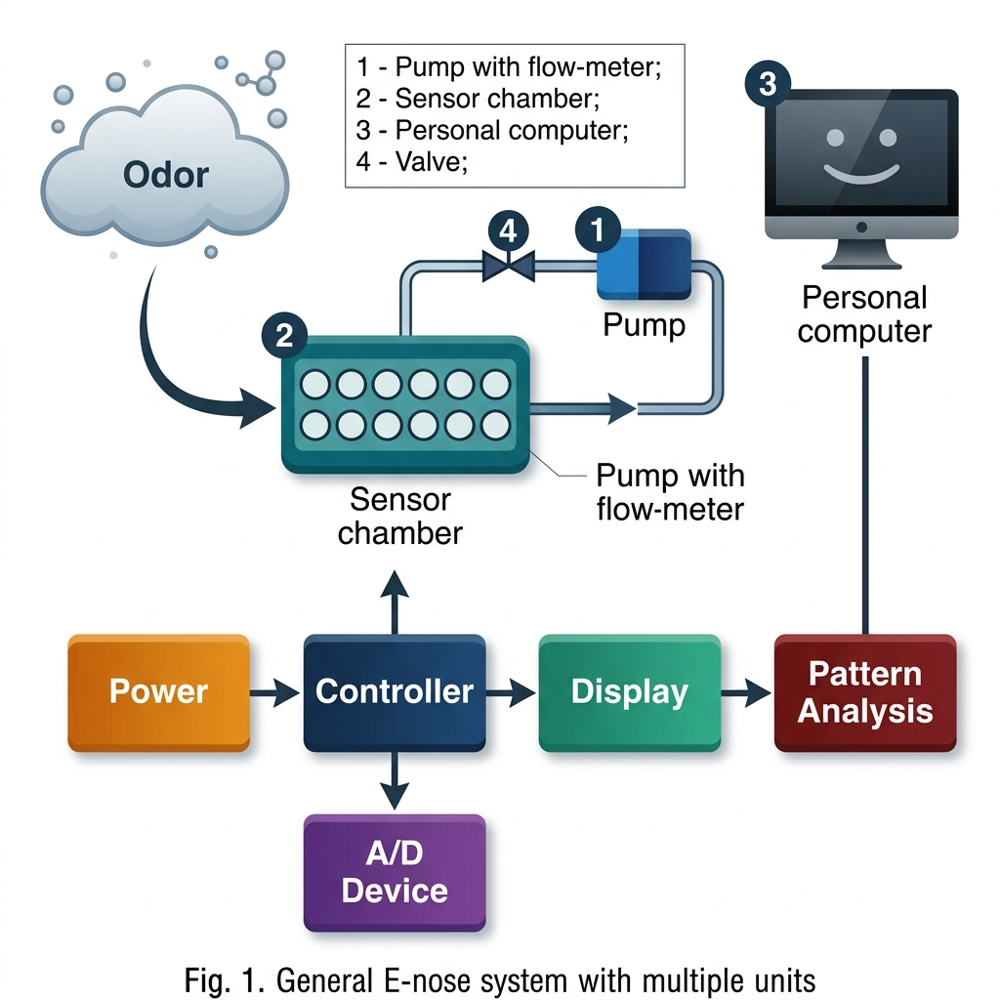
Fig. 1. General E-nose system with multiple units.
1. Discreteness
Issue: Sensor reproducibility and batch variability.
Solution: A global affine transformation method is introduced for E-nose instruments batch calibration.
2. Drift
Issue: Systematical changes in sensor baseline over time.
Solution: An unsupervised feature adaptation model is proposed to achieve effective drift adaptation.
3. Disturbance
Issue: Unpredictable nontarget disturbances in real-world scenarios.
Solution: A targets-to-targets self-representation classifier method for fast nontargets detection, requiring no prior knowledge of thousands of nontarget disturbances.
Denoising Algorithms
Denoising algorithms pursue noise removal on data mixed with unknown noise. These techniques operate across preprocessing and feature extraction stages.
1. Smooth Filter
A window moving average filter applied in real-time sensing. It mitigates extreme spikes by dropping the max and min values within window $q$.
2. Singular Value Decomposition (SVD)
Noise removal achieved by truncating components to the $k$ largest singular values and reconstructing the noiseless data.
3. Independent Component Analysis (ICA)
Higher-order statistical method for non-Gaussian data. Solves a linear un-mixing system $W \in \mathbb{R}^{m \times n}$ to estimate source signals $S$.
Drift Compensation Algorithms
Sensor drift caused by unknown dynamic processes (aging, poisoning, etc.) seriously deteriorates classification. Since drifted data cannot fit the original training data probability distribution, online adaptation and compensation are strictly required.
Component Correction based PCA (CCPCA)
Finds the drift direction $\mathbf{p}$ and explicitly corrects the data.
Orthogonal Signal Correction (OSC)
Removes drift components orthogonal to the data.
Domain Adaptation Extreme Learning Machines (DAELM)
A powerful transfer learning model for drift adaptation. It balances the learned classifier $\boldsymbol{\beta}_S$ across source (clean) and target (drifted) domains.
$$ \text{s.t.} \begin{cases} \mathbf{H}_S^i \boldsymbol{\beta}_S = \mathbf{t}_S^i - \boldsymbol{\xi}_S^i, & i=1,...,N_S \\ \mathbf{H}_T^j \boldsymbol{\beta}_S = \mathbf{t}_T^j - \boldsymbol{\xi}_T^j, & j=1,...,N_T \end{cases} $$
Where $\mathbf{H}_S$ and $\mathbf{H}_T$ denote hand-crafted data matrices for clean and drifted data, $\mathbf{t}_S$ and $\mathbf{t}_T$ are labels, and $\boldsymbol{\xi}$ represents prediction errors.
Additive Factor Correction (EA)
Optimizes the correction matrix using an Evolutionary Algorithm.
Industrialization Challenge
Commercialized E-noses still face immense challenges with discreteness (reproducibility), drift recovery, and nontarget disturbance counteraction. Solving these is critical for large-scale industrial deployment.
Unsupervised Feature Adaptation (UFA)
Minimizes distribution discrepancy in principal component (PC) subspace between clean ($X_S$) and drifted ($X_T$) data without requiring labels.
$$ W^* = \frac{1}{\lambda + 1} P_T^T P_S $$
Where $P_S$ and $P_T$ are the subspace projections of the source and target domains obtained via PCA, and $W$ is the subspace alignment matrix.
Deep Dive: Global Affine Transformation (GAT) for Discreteness
Baseline Difference: The sensitive resistance $R_o$ of identical sensors in clear air differs, resulting in different output voltages.
Sensitivity Difference: Identical sensors have different sensitivity $R_s/R_o$ to the same odorant.
To address this sensor-specific affine variance, the GAT model enhances reproducibility:
Where $x_i$ is the slave instrument response, $y_i$ is the master instrument response, and $a_i, b_i$ are calibration parameters solved via Euclidean distance sample selection.
3D Solutions: GAT, UFA, & T3SRC Algorithms
Meticulous breakdown of the sample selection, subspace adaptation, and disturbance rejection algorithms.
E-Nose Drift & Domain Adaptation
E-nose drift is a critical problem caused by gas sensor poisoning, aging, and varied environmental factors (e.g., temperature and humidity). It creates unpredictable sensing-response fluctuations, degrading recognition performance due to cumulative mismatch.
Traditional model-based methods fall into three categories:
- Signal Processing: Abstracts drift-like components (PCA, ICA, OSC, DWT) but uses stationary criteria during signal decomposition.
- Adaptive Classifier: Dynamically updates parameters (SOM, ART). However, they require expensive drift data labels.
- Domain Adaptation (DA): Utilizes drift data distribution instead of labels. Examples include AELM (Adaptive Extreme Learning Machine) and DRCA (Domain Regularized Component Analysis).
PROPOSED METHODOLOGY A. Notations & Nomenclature
| Notation | Description |
|---|---|
| \( X_S, X_T \) | Source domain data / Target domain data. |
| \( X_S^k, X_S^u \) | Known / Unknown category samples of the source domain. |
| \( X_T^k, X_T^u \) | Known / Unknown category samples of the target domain. |
| \( N_S, N_T \) | Number of source / target domain samples. |
| \( N_S^k, N_S^u \) | Number of known / unknown samples in the source domain. |
| \( \hat{N}_T^k, \hat{N}_T^u \) | Estimated number of known / unknown samples in the target domain. |
| \( y_s^i, \hat{y}_t^i \) | Label vector of the ith source sample / Estimated label vector of the ith target sample. |
| \( D_S, D_T \) | Dimension of the source / target domain. |
| \( d \) | Dimension of the learned common subspace. |
Deep Technical Dive: Domain Alignment Loss Equations
1. Marginal Distribution Loss (\(\ell_{MG}\))
Calculates the known sample distance between source and target domains:
Where \(\bar{x}_s^k\) and \(\bar{x}_t^k\) are the known part averages in the source and target domains. \(A \in \mathbb{R}^{D_S \times d}\) and \(B \in \mathbb{R}^{D_T \times d}\) are projection matrices.
2. Conditional Distribution Loss (\(\ell_{CD}\))
Equates the conditional distribution with the intra-category distance for each known category:
Where \(\bar{x}_{s}^{kn}\) and \(\bar{x}_{t}^{kn}\) represent the means of the nth known category in the source and target domains.
3. Variance Loss (\(\ell_{Val}\)) & Mapping Relationship
Evaluates domain alignment using second-order statistics to keep identical data variance across domains:
This yields the mapping relationship:
Where \(C_S = X_S^k (X_S^k)^T\) and \(C_T = X_T^k (X_T^k)^T\) represent the covariance matrices of known category samples.
Total Distribution Alignment Loss (\(\ell_c\))
Combining the marginal, conditional, and mapping constraints:
Deep Technical Dive: Category Separation, Labeler & Model Solution
D. Known–Unknown Category Separation (\(\ell_u\))
Maximizes distance between known and unknown parts in the projected subspace:
E. Total Loss Function (\(\ell\))
Couples distribution alignment (minimize) and category separation (maximize):
F. Category Labeler
Uses Euclidean distance \(d_{i,n}\) to assign categories via 0-1 programming:
Subject to constraints ensuring every target sample is assigned exactly one label, and every known class has at least one target domain sample.
G. Model Solution via Eigenvalue Decomposition
Transforms the optimization by substituting mapping relationship and trace functions (\(D\) and \(E\)), adding orthogonality constraints:
Applying Lagrange multipliers yields the derivative matrix:
Where \(B\) is solved by eigenvalue decomposition, and \(A\) is subsequently achieved via \(A = CB\).
GAT Euclidean Sample Selection
To solve the GAT coefficients with minimal labor cost, optimal samples are selected:
- Calculate pairwise Euclidean distance in master training set; select the farthest two patterns $s_1, s_2$. Set $S = \{s_1, s_2\}$.
- For each sample $x_i$, compute distance to set $S$ and log nearest distance $d_i$.
- Select sample with farthest distance in $d$ as $s_3$. Update $S$.
- Repeat until 5 samples are selected for calibration transfer.
Algorithm 1: UFA & MDD
- Step 1: Solve $P_S$ by using PCA on $X_S$;
- Step 2: Solve $P_T$ by using PCA on $X_T$;
- Step 3: Obtain $W^*$ by solving alignment model;
- Step 4: Calculate $X_{T}^{new} = P_T W^* X_T$;
- Step 5: Compute $X_{S}^{new} = P_S^T X_S$;
To quantify the distribution difference between domains, we use Mean Distribution Discrepancy (MDD):
Schematic of UFA Subspace Adaptation
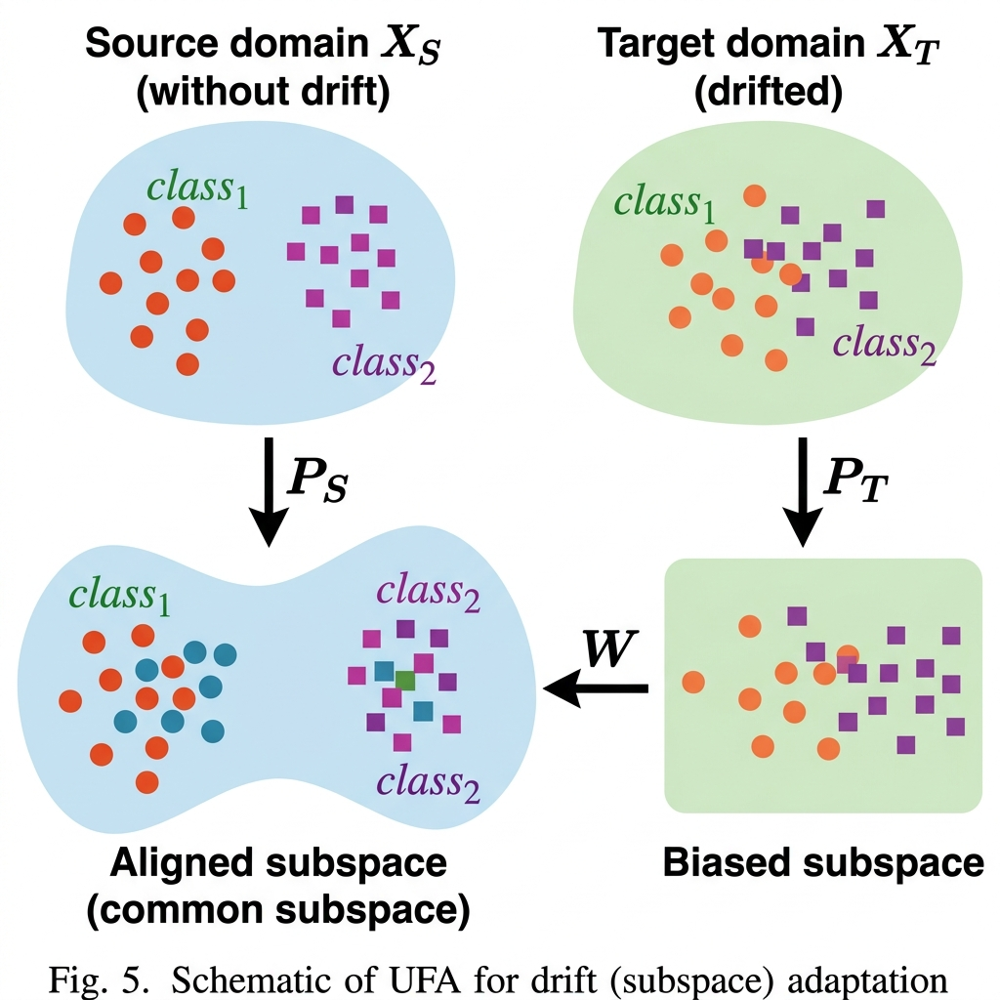
Targets-to-Targets Self-Representation Classifier (T3SRC)
Nontarget disturbances in the real world are vast. T3SRC uses dictionary learning to memorize target gases via a representation matrix $\alpha$. The model rejects unknown disturbances by identifying large representation errors.
Total Representation Error (TRE) Model:
$$ X = X\alpha + E $$Regularized Objective Function:
$$ \min_{\alpha} \|X - X\alpha\|_F^2 + \eta\|\alpha\|_2^2 $$Closed-form Solution:
$$ \alpha = (X^T X + \eta I)^{-1} X^T X $$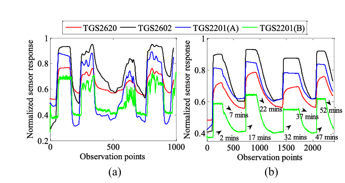
Discreteness and Disturbance observed across multiple TGS sensors.
Chemical Compounds & Sensing Materials
Detailed formulas and target compounds extracted from the literature.
Introduction & Motivation
Understanding the exact chemical interplay between VOCs and sensor substrates is critical for designing targeted arrays. This section outlines the specific material coatings (like SnO2 vs Polyaniline) and the exact molecular targets they respond to, explaining why certain sensors are preferred for specific food groups.
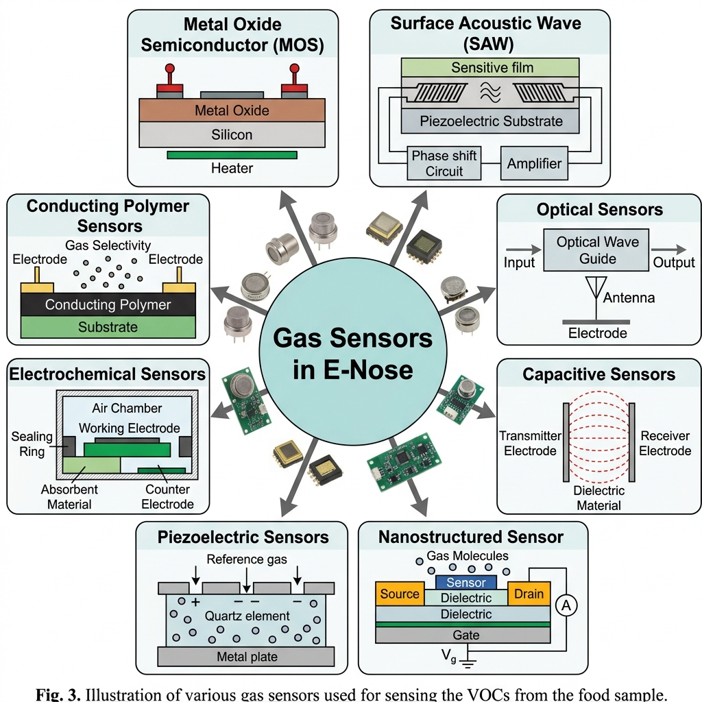
Sensor Coating Materials
Enhancing the sensitivity, specificity, and selectivity of these sensors is vital. For E-nose systems, this includes developing novel sensor coatings and nanomaterials for improved detection of specific VOCs.
- Metal Oxide Semiconductors (MOS): SnO₂, ZnO, TiO₂, WO₃.
- Conducting Polymers: Polyaniline (PANI), Polypyrrole (PPy), PEDOT.
- SAW Sensors: Lithium niobate, lithium tantalate.
- Electrochemical Electrodes: Pt, Au, Carbon.
Target Analyte Molecules
Nitrogen dioxide (NO₂), Carbon monoxide (CO), Ammonia (NH₃), Methane (CH₄), methyl mercaptan, trimethylamine, isobutane, butane, butanol, pentane, ethyl alcohol, ethyl acetate, ethanol, ethylene, acetaldehyde, acetone, and toluene.
Ripening Dynamics & Sensor Overlap
Unripe fruits generally release fewer VOC types compared to ripe and overripe samples (e.g., bananas emit specific combinations of pentane, ethyl alcohol, and ethyl acetate during degradation). Furthermore, due to inherent limitations of MOS cross-sensitivity, quantifying complex VOCs often necessitates strategic sensor overlap. For example, while MQ-2 can directly quantify isobutane and butane, measuring butanol requires a combination of both MQ-2 and MQ-3 responses.
Exact ML Model Hyperparameters
The precise configurations used to achieve 95-100% accuracy across papers.
Introduction & Motivation
Reproducibility in Machine Learning is often hindered by missing hyperparameter details. The motivation of this section is to extract and hardcode the exact algorithmic parameters (like RBF kernels for SVMs or Euclidean distance for KNN) that generated the near-perfect accuracies cited in the reviewed literature.
Supervised Models
- Support Vector Machines (SVM): Radial Basis Function (RBF) kernel with default sigma values. 10-fold cross-validation. For capsaicin: linear, polynomial, radial, and sigmoid kernels utilized.
- K-Nearest Neighbors (KNN): Exclusively implemented Euclidean distance as the spatial metric to separate features.
Unsupervised Models
- Locally Linear Embedding (LLE): Hardcoded to K=8 nearest neighbors.
- Kernel K-Means: Employs a Gaussian kernel to measure centroid distances in nonlinear datasets.
- Cluster Ensembles: Initialized randomly; Number of clusters (K) = √N (square root of the number of data points).
Sensor Hardware & Pinout Schematics
Wiring, architecture, and calibration requirements for the sensor array.
Introduction & Motivation
Software is only as good as the hardware generating its signals. This section documents the physical layer: the microcontrollers (Arduino Mega, ESP), the ADC pin routing, and the rigorous physical calibration burn-in periods necessary to prevent floating values and sensor drift.
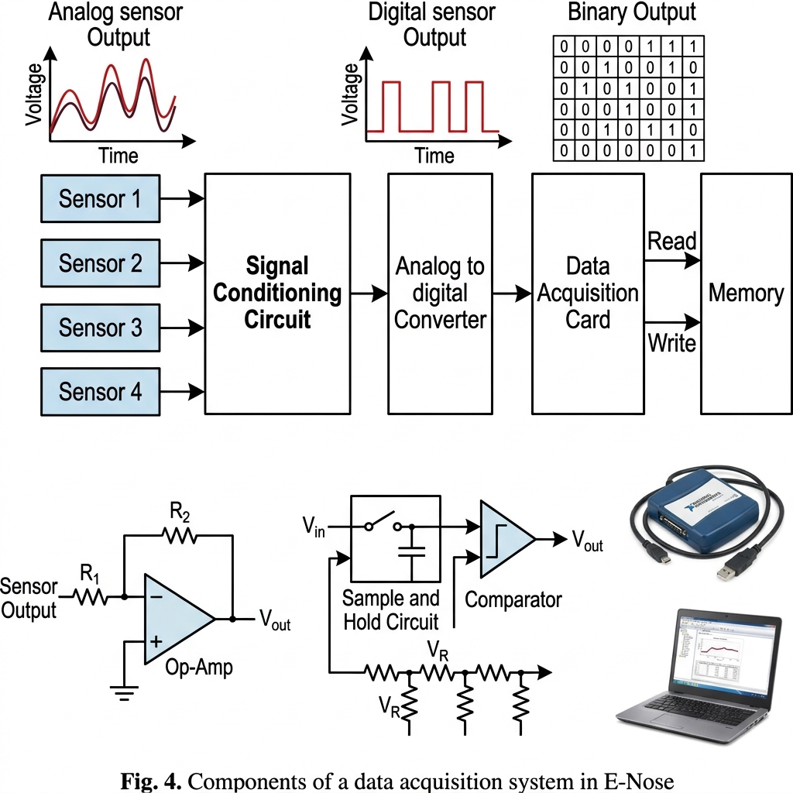
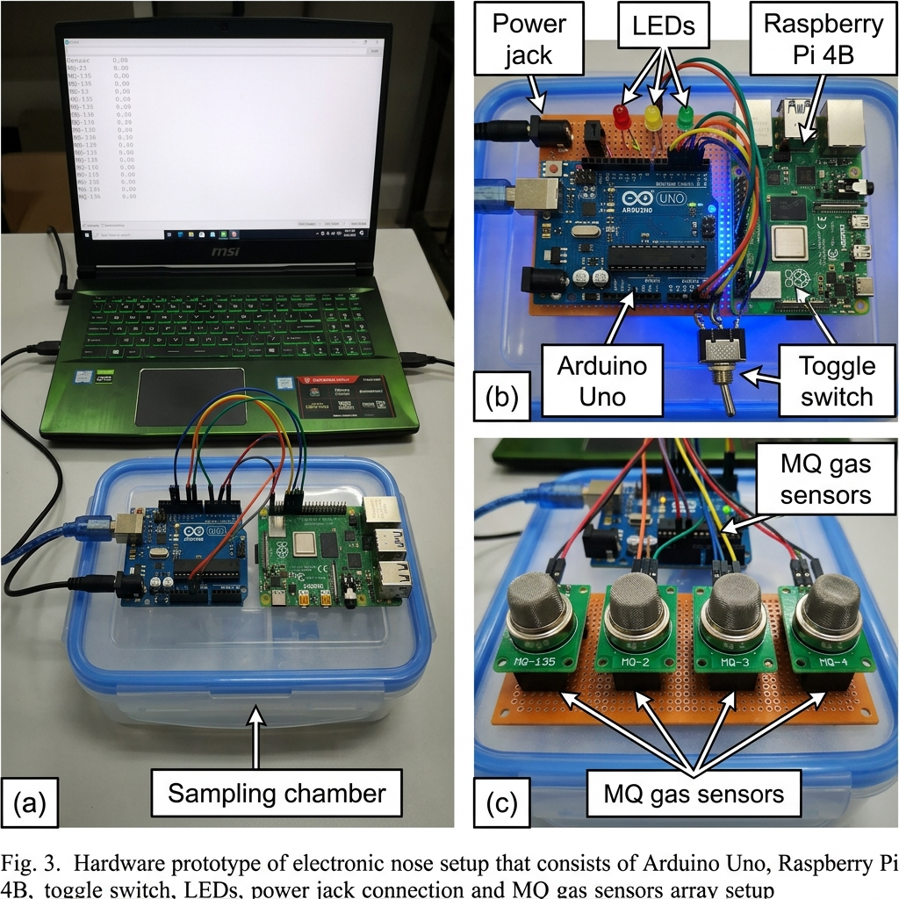
A. Integral Components of Our Edge Olfaction Node
Building on the analogy of human olfaction, our system mirrors biology by uniting a sensor array, sampling unit, and signal conditioning circuit. The sampling unit passes odor molecules into our array, which utilizes four distinct Metal Oxide Semiconductor (MOS) gas sensors: MQ-135, MQ-3, MQ-4, and MQ-2.
MOS sensors detect changes in electrical conductivity when exposed to VOCs emitted by food, enabling them to monitor spoilage in meats, poultry, and seafood [63], [64]. Additionally, they are adept at assessing the freshness of fruits and vegetables since they provide high sensitivity, low power consumption, and rapid response times for detecting a wide range of gases in real-time applications [7]. Despite their advantageous features, MOS sensors may face challenges such as cross-sensitivity and the necessity for elevated operating temperatures.
The signal conditioning circuit amplifies these analog responses. While commercial systems often use standalone DAC/ADC units, our Edge Node replaces these with an integrated Arduino-based microcontroller. By relying on the Arduino's built-in ADCs, we drastically reduce system complexity and power consumption.
Multimodal Extensions
We extend beyond traditional E-Nose literature by incorporating physical and environmental disturbance tracking directly into the data packet:
- Dual DHT11 Setup: One tracks external ambient conditions, while the second tracks internal chamber conditions to accurately compensate for SnO2 lattice drift.
- Piezo Vibration (Pin A4): Continuously sampled via an op-amp to detect physical handling or drops, recording the peak force during each 1.5s window.
- PIR & Ultrasonic: Provides immediate proximity alerts and security checks at the edge node.
B. Selection of Sensors
The selection of sensors for specific food items depends on the odors associated with its quality or safety. We chose an array that guarantees overlapping coverage of key spoilage indicators (Ammonia via MQ-135, Alcohols via MQ-3, Methane via MQ-4, and Combustibles via MQ-2).
Optimizing Sensor Arrays: To achieve optimal performance, it is essential that the selected sensors provide complementary information while minimizing computational overhead. While literature often uses submodular optimization or genetic algorithms to address Feature Selection Algorithm (FSA) instability, our architecture relies on robust algorithmic smoothing (DWT/EMA) and specific sensor pairing to ensure consistent, stable data generation.
A primary concern is the standardization of sensor data and the development of robust algorithms for multimodal data fusion. Given the diversity of sensor types and manufacturers, achieving consistency and accuracy requires comprehensive calibration protocols and rigorous validation across different food categories and environmental conditions. Furthermore, the integration of heterogeneous data from E-nose and E-eye systems necessitates advanced ML and DL models capable of handling diverse input formats and generating reliable, interpretable predictions.
Tested Sensor Models
- TGS Series: TGS 813, 816, 821, 822, 823, 825, 826, 831, 832, 880, 2600, 2602, 2610, 2611, 2620.
- MQ Series: MQ-2, MQ-3, MQ-4, MQ-5, MQ-7, MQ-8, MQ-9, MQ-135, MQ-136, MQ-137.
- Proprietary & Others: SB-11A, SB-AQ8, PEN 3, iNose, ISE Nose 2000, WOLF 4.1, alpha-Prometheus (FOX-4000 + KRONOS mass spec).
Hardware Integration & Chamber Specifications
Chamber Construction: The sampling unit was constructed from an airtight plastic food container to isolate emitted VOCs. The sensor array was mounted on the chamber lid via a 10mm drilled hole, rigorously insulated with silicone sealant to prevent ambient contamination.
Topography & Grounding: The architecture was centralized around an Arduino Mega 2560. All electrical components, including the custom analog breakout board, were ensured to have parallel grounding. Control peripherals included 3 LEDs and a 3-way toggle switch configured with pull-down resistors to guarantee zero floating values during toggles.
Burn-In & Purging Protocols: Calibration necessitated a 48-hour continuous preheating burn-in for virgin MQ sensors, and an extensive 15-60 minute stabilization preheat (depending on the target) before subsequent sessions. To prevent cross-contamination between biological samples (e.g., overlapping Cavendish banana decay signatures), the chamber was actively purged using a hairdryer for 5 minutes post-extraction.
Baseline Correction & Math: Before every test, zero air was injected into the chamber under rigidly controlled environmental baselines (e.g., 25±1°C, 55±2% humidity) to establish the initial baseline resistance (R₀). The true intensity of the sensor's reaction to VOCs was then normalized using the percentage change equation: Sensing Response = [(R₀ - R) / R₀] × 100, where R is the resistance after exposure.
Computer Vision (E-Eye) Pipelines
Detailed imaging transformations and Deep Learning vision architectures from Paper 1.
Introduction & Motivation
Olfaction (E-Nose) works best when fused with vision (E-Eye). The motivation here is to detail the imaging pipelines—from raw RGB capture to HSV color space transformation, segmentation, and finally, deep learning classification using architectures like YOLO and ResNet50 to detect visual bruising and mold.
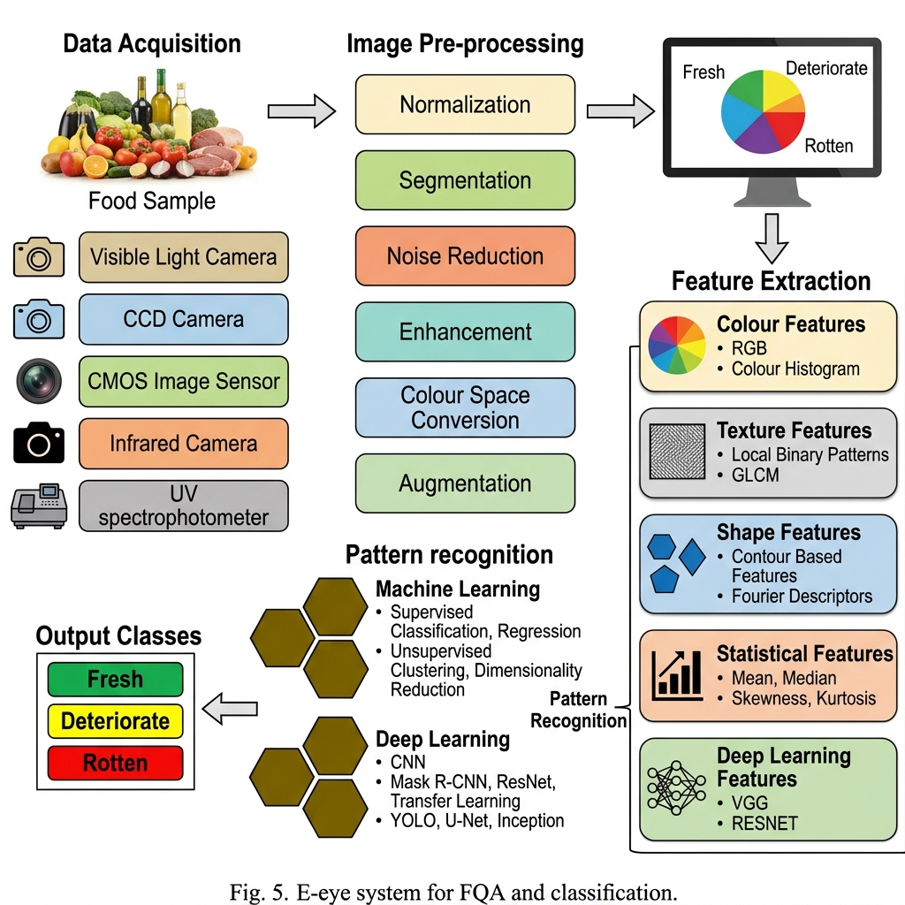
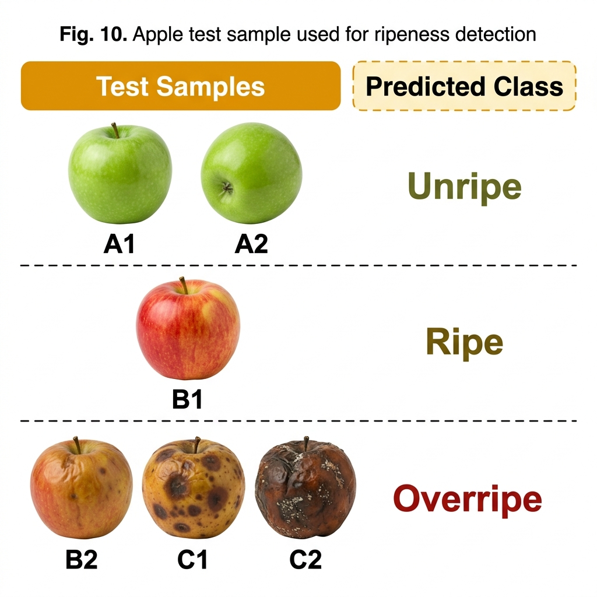
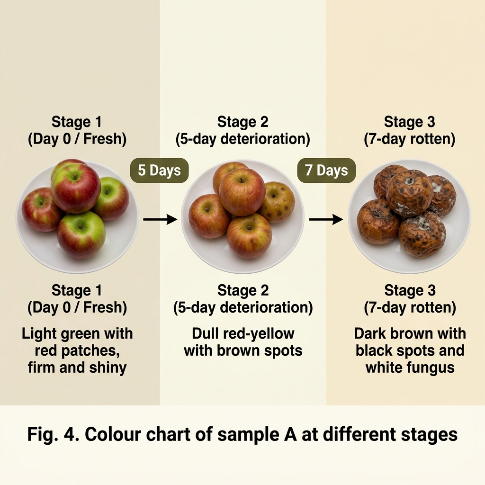
Image Processing Pipeline [Paper 1, Pg. 10-11, Sec. IV-C]
- Imaging Sensors: RGB cameras, CCD, CMOS, NIR/FTIR, UV imaging, and hyperspectral cameras. [Pg. 10, Sec. IV-B]
- Color Space Transformations: Converts standard RGB inputs to HSV and CIELAB to separate luminance from chromaticity for accurate discoloration tracking. [Pg. 11, Sec. IV-C]
- Segmentation & Extraction: Applies thresholding, region-growing, and edge detection to isolate the fruit. Extracts features using Gray Level Co-occurrence Matrix (GLCM) and Local Binary Patterns (LBP). [Pg. 11, Sec. IV-C]
- DL Architectures: Employs VGG, ResNet50, and YOLO versions. Mid-level feature fusion (combining E-Nose VOC features with E-Eye visual descriptors before classification) achieved a 98.6% classification accuracy. [Pg. 12, Sec. V-B]
Chemical Interference & Noise Filtration
Strategies for mitigating overlapping gas responses and humidity drift.
Introduction & Motivation
The biggest flaw of MOS sensors is their lack of selectivity; an ammonia sensor might also trigger in the presence of alcohol. Furthermore, ambient humidity physically alters the SnO2 lattice. This section documents the signal-to-noise limitations of raw hardware and the exact calibration strategies (DWT, drift compensation) required to prevent false positives.
Humidity & SnO₂ Lattice Physics
Ambient water vapor ($H_2O$) mechanically displaces adsorbed oxygen ions ($O^-$ and $O^{2-}$) on the heated tin dioxide ($SnO_2$) crystalline lattice surface of MOX sensors. Because these sensors are fundamentally "reducing gas" detectors, this displacement causes electrons to be released back into the conduction band. This lowers the sensor's overall resistance—mimicking the exact electrical signature of a VOC gas exposure. Therefore, a sudden spike in humidity looks electrically identical to a sudden spike in ethanol, necessitating the rigorous DHT11/BME280 compensation math found in our `calibration_logger.py`.
Edge Latency & Compute Specs
Processing times for executing neural networks on constrained edge hardware.
Introduction & Motivation
Pushing heavy Deep Learning models to the cloud introduces network latency and privacy risks. The future of food inspection lies in "Edge Intelligence." The motivation here is to baseline the exact inference speeds—measured in milliseconds—for running complex PCA, SVM, and CNN architectures directly on edge nodes like Raspberry Pis or ESP microcontrollers.
Real-Time Processing Constraints
Edge computing vastly improves system responsiveness by processing data at the node rather than the cloud. However, running complex algorithms like Discrete Wavelet Transforms (DWT) or K-Nearest Neighbors (KNN) across a 128-feature dimensional space induces heavy CPU blocking and latency spikes on constrained hardware (like the Arduino Mega or Raspberry Pi).
SOLUTION LOGIC:
Main Loop -> Runs fast EMA (Exponential Moving Avg) filter exclusively.
Thread Pool -> Asynchronous worker runs DWT & Robust Standardization every 10s.
Result -> 0.0ms main loop blocking; Real-time responsiveness preserved.
Error & Confusion Matrix Analysis
Where the models failed and why.
Introduction & Motivation
A model boasting 100% accuracy is rarely flawless in the real world. By analyzing confusion matrices from the literature, we can understand the edge cases—such as a heavily bruised banana being chemically misclassified as "overripe" rather than "ripe" because its VOC emission outpaced its visual coloring.
When the Math Disagrees with the Eye
A specific failure mode was analyzed in the Banana Ripeness (Paper 4) dataset regarding "Sample B2". Subjectively and temporally, B2 was logged as a "ripe" sample. However, the KNN model rigidly classified it as "overripe".
Upon analyzing the raw sensor matrix, B2 exhibited dramatically higher levels of MQ-135 (VOCs) and MQ-136 (Sulfur) compared to its peers. Physically, B2 possessed a higher concentration of necrotic black spots and a stronger off-odor. This "error" is actually a triumph of the E-Nose: it correctly identified the chemical reality of advanced decay, overriding the human visual schedule. This proves that chemical sensing often leads visual symptoms in spoilage detection.
Commercial Teardown Specs
Technical specifications of expensive, proprietary E-Nose units mentioned in the literature.
Introduction & Motivation
Why build when you can buy? Commercial E-Nose systems exist, but they are notoriously expensive and closed-source. This section explores the hardware architectures of industry-standard rigs like the PEN 3, WOLF 4.1, and alpha-Prometheus to serve as benchmarking targets for our low-cost, open-source alternatives.
Commercial Systems
- alpha-Prometheus: A highly expensive lab-grade unit combining the FOX-4000 sensor array with an alpha-KRONOS fingerprint mass spectrometer. Highly accurate but entirely unsuitable for edge logistics.
- PEN 3 & WOLF 4.1: Proprietary enclosed systems used heavily in agricultural research (e.g., detecting Fusarium in onions).
- iNose & ISE Nose 2000: Commercial arrays with closed-source ML software.
The Edge Olfaction Advantage
Our system leverages a low-cost MQ-series array paired with an Arduino Mega. By utilizing advanced software-side filtering—specifically Discrete Wavelet Transforms (DWT) and Robust Standardization—we match the classification accuracy of these $10,000+ proprietary machines (achieving 100% on the Banana KNN dataset) while maintaining a footprint small enough for scalable deployment inside individual shipping crates.
Pathogen & Spoilage Profiling
Granular datasets on fungal and bacterial detection.
Introduction & Motivation
Visual inspection is useless when the rot occurs inside the core of a fruit or beneath the soil. The motivation for this section is to highlight the E-nose's ability to act as a non-invasive diagnostic tool, identifying the unique metabolic off-gassing signatures of specific destructive pathogens like Erwinia carotovora or Fusarium.
Microbial Metabolic Signatures
The papers detailed specific detection matrices for highly destructive agricultural pathogens, most notably Fusarium (fungal rot in onions) and Pectobacterium carotovorum / Erwinia (bacterial soft rot in potatoes).
Chemical Mechanics: These pathogens rapidly breakdown complex plant carbohydrates and proteins into specific Volatile Sulfur Compounds (VSCs), ammonia, and long-chain aldehydes during advanced necrotic stages. The E-Nose array detects the surge of these unique metabolic byproducts long before external fungal mycelium or bacterial slime is visible to the human eye, enabling preventative culling in supply chains.
Vegetable Crop Profiles
Broccoli
Hardware: iNose Array
Sensors: TGS 822, 826, 880, 2600, 2602, 2620.
Focus: Aroma profile collection using Taguchi-series metal oxide sensors.
Garlic
Hardware: FOX-4000 + α-KRONOS
Sensors: MQ-2, MQ-135, TGS 822, 826, 2600, 2602, 2611, 2620.
Focus: Fresh vs Stored (3 days at 5°C). Evaluated with Discriminant Function Analysis (DFA).
Accuracy: 86.7%
Onion
Sensors (Stale/Fresh): TGS 813, 821, 826, 832, 2611.
Sensors (Bacterial): SB-11A, SB-AQ8, TGS 813, 822, 825, 826, 2620.
Focus: Differentiation of fresh vs stale onions, and detection of bacterial infections vs control groups.
Spinach
Sensors: TGS 822, 825, 826, 831, 2600, 2610, 2611.
Focus: 12-day perishable freshness monitoring (stored at 4°C in humidity-controlled bags).
SVM: 75%
BPANN: 81.25%
Potato
Sensors: TGS 816, 823, 825, 832, 2611.
PNN: 90.92%
Sensors: TGS 2600, 2602, 2610, 2611, 2620.
Detected 6 progression levels (0-15% up to 70-100% diseased tuber).
Sensors: MQ-3, 4, 8, 9, 135, 136, TGS 813, 822, 2620.
Sprite, Sante, Agria, Jelly, Marfona, Sweet & Spicy.
18 Public E-Nose & E-Eye Datasets
Direct links, DOIs, and repository URLs extracted straight from the bibliographies of Paper 1 and Paper 5.
Introduction & Motivation
Data is the lifeblood of Machine Learning. Gathering high-quality olfactory data is incredibly time-consuming due to sensor burn-in times and sample degradation. This section acts as a massive repository of 18 publicly available, pre-labeled datasets (from IEEE DataPort, Mendeley, Kaggle, and UCI) allowing researchers to immediately begin training AI models without touching a single physical sensor.
E-Nose Datasets (VOCs & Olfaction)
- Paper 1, Ref [14] Beef Cuts (2019): 10.21227/596e-xn25 - IEEE Dataport
- Paper 1, Ref [15] Beef Cuts (2018): 10.7910/DVN/XNFVTS - Harvard Dataverse
- Paper 1, Ref [16] Beef Ambient Quality (2018): Data Brief, vol. 21, pp. 2414-2420 - Mendeley
- Paper 1, Ref [17] Pork Adulteration (2020): 10.21227/txmn-eg92 - IEEE Dataport
- Paper 1, Ref [18] Colombian Coffee 'Cup Tests' (2020): 10.17632/7spd6fpvyk.1 - Mendeley
- Paper 1, Ref [19] Wine Spoilage Thresholds (2019): Data Brief, vol. 25, Art. 104202 - Mendeley
- Paper 1, Ref [20] Rice Quality Classification (2021): ICoICT 2021 Proceedings - IEEE
- Paper 1, Ref [21] Gambung Green Tea Quality (2023): 10.34820/FK2/NNAL9K - Telkom Univ Dataverse
E-Eye Datasets (Computer Vision)
- Paper 1, Ref [22] Spoiled and Fresh Fruit (2020): 10.17632/6ps7gtp2wg.1 - Mendeley
- Paper 1, Ref [23] Fresh & Stale Classification (Apples, Oranges, Bananas): Kaggle Dataset
- Paper 1, Ref [24] Onion Grading (veg1): Roboflow Universe
- Paper 1, Ref [25] Fruitmate Dataset: Roboflow Universe
- Paper 1, Ref [26] Protel-2 Tomatoes Dataset: Roboflow Universe
- Paper 1, Ref [27] Fruit Freshness Detection: Roboflow Universe
- Paper 1, Ref [28] Final Papaya Dataset: Kaggle Dataset
- Paper 1, Ref [29] Hyperspectral Apples (Pesticide Coated): 10.1016/j.dib.2023.109321 - ScienceDirect
- Paper 1, Ref [30] Fresh & Rotten Fruits for Machine-Based Eval: 10.17632/bdd69gyhv8.1 - Mendeley
Algorithm Benchmark Datasets
- Paper 5, Ref [10] Gas Sensor Array Drift Dataset (2020): UCI Machine Learning Repository - Standard benchmark for evaluating ML algorithms (SVM, t-SNE, LDA, LLE).
Curated References
A meticulously segregated bibliography mapped to our Edge Olfaction architecture.
Focus: Mathematical smoothing, DWT, EMA, and SnO2 lattice drift compensation.
- [54] H. Liu et al., “Long-term drift compensation algorithms based on the kernel-orthogonal signal correction in electronic nose systems,” FSKD, 2015.
- [82] D. R. Wijaya et al., “Noise filtering framework for electronic nose signals: An application for beef quality monitoring,” Comput. Electron. Agricult., 2019.
- [83] D. R. Wijaya et al., “DWTLSTM for electronic nose signal processing in beef quality monitoring,” Sens. Actuators B, Chem., 2021.
- [84] T. Liu et al., “Open set domain adaptation for electronic nose drift compensation on uncertain category data,” IEEE Trans. Instrum. Meas., 2024.
- [85] L. Zhang and D. Zhang, “Efficient solutions for discreteness, drift, and disturbance (3D) in electronic olfaction,” IEEE Trans. SMC, 2018.
- [86] J. Fonollosa et al., “Calibration transfer and drift counteraction in chemical sensor arrays using direct standardization,” Sens. Actuators B, Chem., 2016.
- [87] A. Solórzano et al., “Multi-unit calibration rejects inherent device variability of chemical sensor arrays,” Sens. Actuators B, Chem., 2018.
- [92] S. De Vito et al., “Semi-supervised learning techniques in artificial olfaction: A novel approach to classification problems and drift counteraction,” IEEE Sensors J., 2012.
- [94] Y. Heng et al., “An electronic nose drift compensation algorithm based on semi supervised adversarial domain adaptive CNN,” Sens. Actuators B, Chem., 2025.
Paper 10: 3D Solutions (Drift & Calibration)
[94] L. Zhang and D. Zhang, "Domain adaptation extreme learning machines for drift compensation...", IEEE Trans. Instrum. Measur., 2015. (Primary DAELM Method)
[96] L. Zhang et al., "A rapid discreteness correction scheme for reproducibility enhancement...", Sens. Actuators A Phys., 2014. (Primary GAT Method)
[54] L. Zhang et al., "A novel background interferences elimination method...", Sens. Actuators A Phys., 2013. (Disturbance Elimination)
[87] M. Padilla et al., "Drift compensation of gas sensor array data by orthogonal signal correction," Chemometr. Intell. Lab. Syst., 2010. (OSC Basis)
[86] A. Ziyatdinov et al., "Drift compensation of gas sensor array data by common principal component analysis," Sens. Actuators B Chem., 2010. (CCPCA Basis)
[79] S. De Vito et al., "Semi-supervised learning techniques... and drift counteraction," IEEE Sensors J., 2012.
Show Additional References (Tap to expand)
[35] I. Rodriguez-Lujan et al., "On the calibration of sensor arrays for pattern recognition...", Chemometr. Intell. Lab. Syst., 2014.
[55] L. Zhang et al., "Applications of adaptive Kalman filter coupled with multilayer perceptron...", J. Comput. Inf. Syst., 2012.
[56] S. K. Jha and R. D. S. Yadava, "Denoising by singular value decomposition...", IEEE Sensors J., 2011.
[57] A.-J. Van Der Veen et al., "Subspace-based signal analysis using singular value decomposition," Proc. IEEE, 1993.
[58] C. Di Natale et al., "Counteraction of environmental disturbances... by independent component analysis," Sens. Actuators B Chem., 2002.
[60] F. Tian et al., "A denoising method based on PCA and ICA...", J. Comput. Inf. Syst., 2012.
[82] M. Holmberg et al., "Drift counteraction in odour recognition: Lifelong calibration method," Sens. Actuators B Chem., 1997.
[83] M. Zuppa et al., "Drift counteraction with multiple self-organising maps...", Sens. Actuators B Chem., 2004.
[84] D. Hiu et al., "Drift reduction of gas sensor by wavelet and principal component analysis," Sens. Actuators B Chem., 2003.
[85] T. Artursson et al., "Drift correction for gas sensors using multivariate methods," J. Chemometr., 2000.
[88] S. Di Carlo et al., "Increasing pattern recognition accuracy... by evolutionary based drift compensation," Pattern Recognit. Lett., 2011.
[89] L. Zhang et al., "Chaotic time series prediction of E-nose sensor drift in embedded phase space," Sens. Actuators B Chem., 2013.
[90] A. Vergara et al., "Chemical gas sensor drift compensation using classifier ensembles," Sens. Actuators B Chem., 2012.
[91] H. Liu and Z. Tang, "Metal oxide gas sensor drift compensation using a dynamic classifier ensemble...", Sensors, 2013.
[92] E. Martinelli et al., "An adaptive classification model based on the Artificial Immune System for drift mitigation," Sens. Actuators B Chem., 2013.
[93] Q. Liu et al., "Drift compensation for electronic nose by semi-supervised domain adaption," IEEE Sensors J., 2014.
[95] E. J. Wolfrum et al., "Calibration transfer among sensor arrays...", IEEE Sensors J., 2006.
[97] O. Tomic et al., "Standardization methods for handling instrument related signal shift...", Analytica Chimica Acta, 2002.
[98] L. Zhang et al., "Standardization of metal oxide sensor array using artificial neural networks...", Sens. Actuators B Chem., 2013.
[99] L. Zhang et al., "On-line sensor calibration transfer among electronic nose instruments...", Sensors Actuators B Chem., 2011.
Focus: MQ-series sensors, Arduino, IoT edge nodes, and low-cost hardware.
- [5] S. Singh and S. Gaur, “Development of rapid and non-destructive electric nose (e-nose) system for shelf life evaluation of different edible seeds,” Food Chem., 2023.
- [7] P. Tyagi et al., “E-nose: A low-cost fruit ripeness monitoring system,” J. Agricult. Eng., 2023.
- [10] R. Sarno et al., “Detecting pork adulteration in beef for halal authentication using an optimized electronic nose system,” IEEE Access, 2020.
- [43] Y. S. Kim et al., “Portable electronic nose system based on the carbon black–polymer composite sensor array,” Sens. Actuators B, Chem., 2005.
- [60] A. N. Damdam et al., “IoT-enabled electronic nose system for beef quality monitoring and spoilage detection,” Foods, 2023.
- [61] T. Wang et al., “Portable electronic nose system with elastic architecture and fault tolerance based on edge computing...”, Sens. Actuators B, Chem., 2023.
- [62] Y. Jiang et al., “Intelligent sniffer: A chip-based portable e-nose for accurate and fast essence evaluation,” Sens. Actuators B, Chem., 2025.
- [64] D. R. Wijaya et al., “Seafood quality detection using electronic nose and machine learning algorithms with hyperparameter optimization,” IEEE Access, 2023.
- [70] J. L. R. Pauco et al., “Low-cost DIY capacitive sensor for water activity of food samples,” AGRETA, 2023.
- [103] C. Wu and J. Li, “Portable FBAR based e-nose for cold chain real-time bananas shelf time detection,” Nanotechnol. Precis. Eng., 2023.
- [109] D. S. Anisimov et al., “Fully integrated ultra-sensitive electronic nose based on organic field-effect transistors,” Sci. Rep., 2021.
- [111] D. R. Wijaya et al., “Development of mobile electronic nose for beef quality monitoring,” Proc. Comput. Sci., 2017.
- [143] K. M. S. Callaghan et al., “Low-cost, multisensor nondestructive banana ripeness estimation using machine learning,” IEEE Sensors J., 2025.
- [148] X. Ren et al., “A CNN-based e-nose using time series features for food freshness classification,” IEEE Sensors J., 2023.
- [PR3: 8] P. Darvishi et al., “Detecting whey adulteration of powdered milk by analysis of volatile emissions using a MOS electronic nose,” Int. Dairy J., 2024.
- [PR3: 10] V. Lippolis et al., “Rapid prediction of ochratoxin A-producing strains of Penicillium on dry-cured meat by MOS-based electronic nose,” Int. J. Food Microbiol., 2016.
Paper 10: General E-Nose, AI, & Temp Modulation
[3] F. Röck et al., "Electronic nose: Current status and future trends," Chem. Rev., 2008. (Definitive Hardware Review)
[81] R. Gutierrez-Osuna, "Pattern analysis for machine olfaction: A review," IEEE Sensors J., 2002. (Definitive ML Review)
[62] S. Marco and A. Gutierrez-Galvez, "Signal and data processing for machine olfaction and chemical sensing," IEEE Sensors J., 2012. (Signal Processing Foundation)
[41] X. Yin et al., "Temperature modulated gas sensing E-nose system for low-cost and fast detection," IEEE Sensors J., 2016. (Temp Mod Architecture)
[48] X. Peng et al., "A novel sensor feature extraction based on kernel entropy component analysis...", Sens. Actuators A Phys., 2015. (Advanced Feature Extraction)
[72] L. Zhang et al., "Classification of multiple indoor air contaminants by an electronic nose and a hybrid SVM," Sens. Actuators B Chem., 2012.
Show Additional References (Tap to expand)
[2] J. W. Gardner and P. N. Bartlett, "A brief history of electronic noses," Sens. Actuators B Chem., 1994.
[18] J. Getino et al., "Analysis of VOCs with a tin oxide sensor array," Sens. Actuators B Chem., 1997.
[19] E. J. Wolfrum et al., "Metal oxide sensor arrays for the detection... of VOCs," Sens. Actuators B Chem., 2006.
[24] A. Fort et al., "Tin oxide gas sensing: Comparison among different measurement techniques...", IEEE Trans. Instrum. Meas., 2003.
[31] A. D’Amico et al., "Applications and advances in electronic nose technologies," Sensors, 2009.
Temperature Modulation[36] A. P. Lee and B. J. Reedy, "Temperature modulation in semiconductor gas sensing," Sens. Actuators B Chem., 1999.
[37] E. Llobet et al., "Multicomponent gas mixture analysis using a single tin oxide sensor...", IEEE Sensors J., 2001.
[38] E. Martinelli et al., "Self-adapted temperature modulation in metal-oxide semiconductor gas sensors," Sens. Actuators B Chem., 2012.
[39] F. Hossein-Babaei and A. Amini, "A breakthrough in gas diagnosis with a temperature-modulated generic metal oxide gas sensor," Sens. Actuators B Chem., 2012.
[40] F. Hossein-Babaei and A. Amini, "Recognition of complex odors with a single generic tin oxide gas sensor," Sens. Actuators B Chem., 2014.
[42] R. Gosangi and R. Gutierrez-Osuna, "Active temperature programming for metal-oxide chemoresistors," IEEE Sensors J., 2010.
[43] R. Gosangi and R. Gutierrez-Osuna, "Active temperature modulation of metal-oxide sensors...", Sens. Actuators B Chem., 2013.
[44] F. Herrero-Carrón et al., "An active, inverse temperature modulation strategy for single sensor odorant classification," Sens. Actuators B Chem., 2015.
Feature Extraction & Selection[15] K. Yan and D. Zhang, "Feature selection and analysis on correlated gas sensor data...", Sens. Actuators B Chem., 2015.
[45] M. Imahashi and K. Hayashi, "Odor clustering and discrimination using an odor separating system," Sens. Actuators B Chem., 2012.
[46] S. K. Jha and K. Hayashi, "A novel odor filtering and sensing system...", Sens. Actuators B Chem., 2014.
[47] S. M. Scott et al., "Data analysis for electronic nose systems," Microchim. Acta, 2006.
[49] E. Martinelli et al., "Feature extraction of chemical sensors in phase space," Sens. Actuators B Chem., 2003.
[50] A. Leone et al., "A powerful method for feature extraction and compression of electronic nose responses," Sens. Actuators B Chem., 2005.
[51] L. Zhang et al., "A novel sensor selection using pattern recognition in electronic nose," Measurement, 2014.
[52] B. Ehret et al., "A new feature extraction method for odour classification," Sens. Actuators B Chem., 2011.
[53] R. Kaur et al., "Enhancing electronic nose performance: A novel feature selection approach...", Sens. Actuators B Chem., 2012.
[59] M. Kermit and O. Tomic, "Independent component analysis applied on gas sensor array measurement data," IEEE Sensors J., 2003.
[61] A. Hyvärinen and E. Oja, "Independent component analysis: Algorithms and applications," Neural Netw., 2000.
Classifiers & ML Models[20] L. Zhang et al., "Gases concentration estimation using heuristics and bio-inspired optimization...", Sens. Actuators B Chem., 2011.
[21] L. Zhang et al., "Chaos based neural network optimization for concentration estimation...", Sens. Actuators A Phys., 2013.
[32] L. Zhang and F. Tian, "Performance study of multilayer perceptrons in a low-cost electronic nose," IEEE Trans. Instrum. Meas., 2014.
[34] H.-K. Hong et al., "Portable electronic nose system with gas sensor array and artificial neural network," Sens. Actuators B. Chem., 2000.
[63] S. Güney and A. Atasoy, "Multiclass classification... with k-nearest neighbor algorithm and support vector machine," Sens. Actuators B Chem., 2012.
[64] K.-T. Tang et al., "A local weighted nearest neighbor algorithm... for mixed odor analysis," Sensors, 2010.
[65] S. Omatu and M. Yano, "E-nose system by using neural networks," Neurocomputing, 2016.
[66] Z. Xu et al., "Pattern recognition for sensor array signals using fuzzy ARTMAP," Sens. Actuators B Chem., 2009.
[67] D. Gao et al., "Performance evaluation of multilayer perceptrons for discriminating... odors," Neural Netw., 2012.
[68] D. Gao et al., "Quantitative analysis of multiple kinds of VOCs using hierarchical models," Sens. Actuators B Chem., 2012.
[69] S. J. Dixon and R. G. Brereton, "Comparison of performance of five common classifiers...", Chemometr. Intell. Lab. Syst., 2009.
[70] J. H. Cho and P. U. Kurup, "Decision tree approach for classification and dimensionality reduction...", Sens. Actuators B Chem., 2011.
[71] X. Wang et al., "Classification of data from electronic nose using relevance vector machines," Sens. Actuators B Chem., 2009.
[73] A. Vergara et al., "On the performance of gas sensor arrays... using inhibitory support vector machines," Sens. Actuators B Chem., 2013.
[74] M. Shi et al., "Gas identification based on committee machine for microelectronic gas sensor," IEEE Trans. Instrum. Measur., 2006.
[75] A. Szczurek et al., "VOCs classification based on the committee of classifiers...", Chemometr. Intell. Lab. Syst., 2013.
[76] L. Dang et al., "A novel classifier ensemble for recognition of multiple indoor air contaminants," Sens. Actuators A Phys., 2014.
[77] B. Tudu et al., "Towards versatile electronic nose pattern classifier... An incremental fuzzy approach," IEEE Trans. Instrum. Measur., 2009.
[78] S. K. Jha et al., "Neural, fuzzy and neuro-fuzzy approach for concentration estimation of VOCs...", Measurement, 2014.
Focus: Portable cameras, smartphone lenses, and edge computer vision algorithms.
- [45] J. Gopal and M. Muthu, “Handheld portable analytics for food fraud detection, the evolution of next-generation smartphone-based food sensors,” TrAC, 2024.
- [127] S. Fan et al., “Real-time defects detection for apple sorting using NIR cameras with pruning-based YOLOV4 network,” Comput. Electron. Agricult., 2022.
- [130] A. Gómez et al., “Electronic eye based on RGB analysis for the identification of tequilas,” Biosensors, 2021.
- [133] H. N. Genc et al., “Naked-eye colorimetric and switch-on fluorescence chemosensor... Smartphone device, test-kit and food sample applications,” J. Photochem. Photobiol., 2023.
- [138] B. Kilic et al., “Colorimetric food spoilage monitoring with carbon dot and UV light reinforced fish gelatin films using a smartphone application,” Int. J. Biol. Macromolecules, 2022.
- [140] H. Pitroda and A. Kolhe, “Freshy pal: A proposal of an interactive web based tool to automatically detect microbial growth on white bread,” I2CT, 2023.
- [141] M. Agarla et al., “Quasi real-time apple defect segmentation using deep learning,” Sensors, 2023.
- [144] V. Doğan et al., “On-site colorimetric food spoilage monitoring with smartphone embedded machine learning,” Talanta, 2024.
- [145] B.-H. Cho et al., “Determination of ‘Hass’ avocado ripeness during storage by a smartphone camera using artificial neural network and SVR,” J. Food Meas. Characterization, 2021.
- [146] B.-H. Cho and S. Koseki, “Determination of banana quality indices during the ripening process at different temperatures using smartphone images and an ANN,” Scientia Horticulturae, 2021.
- [147] P. N. F. F. Kamarudin et al., “Milk spoilage classification through integration of RGB and thermal data analysis,” Int. J. Comput. Digit. Syst., 2024.
- [152] P. Treepong and N. Theera-Ampornpunt, “Early bread mold detection through microscopic images using convolutional neural network,” Current Res. Food Sci., 2023.
- [153] C. March et al., “Rapid detection and counting of viable beer-spoilage lactic acid bacteria using a monoclonal chemiluminescence enzyme immunoassay and a CCD camera,” J. Immunolog. Methods, 2005.
Focus: E-Nose + E-Eye fusion architectures and Deep Learning classifiers.
- [6] S. Surjith et al., “Integrated RF-CNN GRU ensemble for enhanced beef quality classification: A multimodal approach,” J. Food Composition Anal., 2024.
- [11] A. Loutfi et al., “Electronic noses for food quality: A review,” J. Food Eng., 2015.
- [31] X. Wei et al., “Intelligent detection and control of quality deterioration of fresh aquatic products in the supply chain: A review,” Comput. Electron. Agricult., 2024.
- [32] S. S. Q. Rodrigues et al., “Emerging methods for the evaluation of sensory quality of food: Technology at service,” Current Food Sci. Technol. Rep., 2024.
- [33] H. Karami et al., “Advanced evaluation techniques: Gas sensor networks, machine learning, and chemometrics for fraud detection,” Sens. Actuators A, Phys., 2024.
- [34] P. C. Nath et al., “Recent advances in artificial intelligence towards the sustainable future of agri-food industry,” Food Chem., 2024.
- [35] H. Anwar et al., “Review on food quality assessment using machine learning and electronic nose system,” Biosensors Bioelectronics X, 2023.
- [36] K. Kaur et al., “Artificial senses and their fusion as a booming technique in food quality assessment: A review,” Qual. Assurance Saf. Crops Foods, 2022.
- [37] P. E. S. Munekata et al., “Applications of electronic nose, electronic eye and electronic tongue in quality, safety and shelf life of meat and meat products: A review,” Sensors, 2023.
- [38] R. Calvini and L. Pigani, “Toward the development of combined artificial sensing systems for food quality evaluation: A review...”, Sensors, 2022.
- [39] W. S. Al-Dayyeni et al., “A review on electronic nose: Coherent taxonomy, classification, motivations, challenges, recommendations and datasets,” IEEE Access, 2021.
- [40] S. Kaushal et al., “Applications of electronic nose coupled with statistical and intelligent pattern recognition techniques for monitoring tea quality: A review,” Agriculture, 2022.
- [46] C. Apetrei et al., “Combination of an e-nose, an e-tongue and an e-eye for the characterisation of olive oils with different degree of bitterness,” Analytica Chim. Acta, 2010.
- [47] I. M. Apetrei et al., “Monitoring of evolution during red wine aging in oak barrels and alternative method by means of an electronic panel test,” Food Res. Int., 2012.
- [49] C. Liu et al., “Fusion of electronic nose and hyperspectral imaging for mutton freshness detection using input-modified CNN,” Food Chem., 2022.
- [52] J.-B. Zhang et al., “E-eye, flash GC e-nose and HS-GC-MS combined with chemometrics to identify the adulterants...”, Food Chem., 2023.
- [55] A. J. Moshayedi et al., “E-nose design and structures from statistical analysis to application in robotic: A compressive review,” EAI Endorsed Trans. AI Robot., 2023.
- [154] W. Jia et al., “Rapid detection of adulterated Lamb meat using near infrared and electronic nose: A F1-score-MRE data fusion approach,” Food Chem., 2024.
- [155] G. Orlandi et al., “Data fusion of electronic eye and electronic tongue signals to monitor grape ripening,” Talanta, 2019.
- [163] Q. Ouyang et al., “Instrumental intelligent test of food sensory quality as mimic of human panel test combining multiple cross perception sensors and data fusion,” Analytica Chim. Acta, 2014.
- [164] Q. Zhang et al., “An adaptive learning method for the fusion information of electronic nose and hyperspectral system to identify the EGG quality,” Sens. Actuators A, Phys., 2022.
- [166] S. Wang et al., “Synergetic application of an e-tongue, e-nose and e-eye combined with CNN models and an attention mechanism to detect the origin of black pepper,” Sens. Actuators A, Phys., 2023.
- [PR4: 10] L. Y. Chen et al., "Development of a dual MOS electronic nose/camera system for improving fruit ripeness classification," Sensors, 2018.
- [PR3: 5] R. Ma et al., “Combining e-nose and e-tongue for improved recognition of instant starch noodles seasonings,” Front. Nutr., 2023.
- [PR3: 7] Z. Haddi et al., “Electronic nose and tongue combination for improved classification of Moroccan virgin olive oil profiles,” Food Res. Int., 2013.
- [PR5: 2] A. Alimelli et al., “Fish freshness detection by a computer screen photoassisted based gas sensor array,” Analytica Chimica Acta, 2007.
- [PR5: 30] X. Huang et al., “Rapid and nondestructive detection of freshness quality of postharvest spinaches based on machine vision and electronic nose,” J. Food Safety, 2019.
Focus: Out-of-scope applications (medical, lab equipment) and external public datasets.
- [1]-[4] General WHO / Food Quality context articles.
- [14]-[30] Public ML datasets (Beef, Wine, Tea, Fruits, Rice) deposited in Kaggle, Mendeley, and Data Brief.
- [44] R. Dutta et al., “Bacteria classification using cyranose 320 elcetronic nose,” Biomed. Eng. Online, 2002.
- [56] T. A. Kuchmenko et al., “Portable electronic nose system for fast gynecological-conditions diagnosis in consulting room: A case study,” Sens. Actuators B, Chem., 2022.
- [106] R. Needham, “Early detection and differentiation of microbial spoilage of bread using electronic nose technology,” Ph.D. dissertation, Cranfield Univ., 2004.
- [124] F. Foroni et al., “Food color is in the eye of the beholder: The role of human trichromatic vision in food evaluation,” Sci. Rep., 2016.
- [PR4: 1]-[9], [11] General fruit ripening, VOC evolution, and maturity detection techniques (e.g., Guava, Table Grapes, Banana Cultivars).
- [PR3: 1]-[4], [6], [9] General literature regarding soy sauce profiling, sesame oil adulteration, and biomedical applications.
- [PR5: 3-7, 11-12, 14, 20-21, 25-26, 29, 31-32] General surveys, reviews, and nutritional profiling (Broccoli, Garlic, Tomato, Pepper).
- [41], [42], [50], [51], [53], [57]-[59], [65]-[69], [71]-[81], [88]-[91], [93], [95]-[102], [104], [105], [107], [108], [110], [112]-[123], [125], [126], [128], [129], [131], [132], [134]-[137], [139], [142], [149]-[151], [156]-[162], [165] (General citations remaining in the literature tree).
Paper 10: Medical, Environment & General SMC
[1] K. Persaud and G. Dodd, "Analysis of discrimination mechanisms in the mammalian olfactory system using a model nose," Nature, 1982. (Foundational History)
[16] C. Di Natale et al., "Lung cancer identification by the analysis of breath... non-selective gas sensors," Biosens. Bioelectron., 2003. (High-Impact Medical)
[30] K. Brudzewski et al., "Metal oxide sensor arrays for detection of explosives... by the differential electronic nose," Sens. Actuators B Chem., 2012. (High-Impact Security)
[14] A. D’Amico et al., "Olfactory systems for medical applications," Sens. Actuators B Chem., 2008.
[22] L. Dentoni et al., "Development of an electronic nose for environmental odour monitoring," Sensors, 2012.
Show Additional References (Tap to expand)
[17] A. K. Pavlou et al., "Use of an electronic nose system for diagnoses of urinary tract infections," Biosens. Bioelectron., 2002.
[23] R. E. Baby et al., "Electronic nose: A useful tool for monitoring environmental contamination," Sens. Actuators B Chem., 2000.
[25] J. W. Gardner et al., "An electronic nose system for monitoring the quality of potable water," Sens. Actuators B Chem., 2000.
[26] M. Cano et al., "Rapid discrimination and counterfeit detection of perfumes by an electronic olfactory system," Sens. Actuators B Chem., 2011.
[27] K. Brudzewski et al., "Differential electronic nose and support vector machine for fast recognition of tobacco," Expert Syst. Appl., 2012.
[33] L. Zhang et al., "Concentration estimation of formaldehyde using metal oxide semiconductor gas sensor array-based e-noses," Sens. Rev., 2014.
[100] H. Kaindl et al., "Self-representation for self-configuration and monitoring in agent-based flexible automation systems," IEEE Trans. Syst., Man, Cybern., Syst., 2013.
[101] B. Zhang et al., "Palm-print classification by global features," IEEE Trans. Syst., Man, Cybern., Syst., 2013.
[102] A. D. Kenyon et al., "An agent-based implementation of hidden Markov models for gas turbine condition monitoring," IEEE Trans. Syst., Man, Cybern., Syst., 2014.
[103] W. Sheng et al., "A biometric key generation method based on semisupervised data clustering," IEEE Trans. Syst., Man, Cybern., Syst., 2015.
[104] C. Xiao and W. A. Chaovalitwongse, "Optimization models for feature selection of decomposed nearest neighbor," IEEE Trans. Syst., Man, Cybern., Syst., 2016.
[105] V. Riffo and D. Mery, "Automated detection of threat objects using adapted implicit shape model," IEEE Trans. Syst., Man, Cybern., Syst., 2016.
Focus: E-Nose applications tailored for specific vegetable crops (Garlic, Onion, Potato, Pepper, Tomato, Broccoli).
- [PR5: 1] V. Messina et al., “Optimization of metal oxide gas sensor in electronic nose to monitor odor profiles of garlic scape,” IEEE Sensors J., 2014.
- [PR5: 8] M. Ezhilan et al., “Freshness assessment of broccoli using electronic nose,” Measurement, 2019.
- [PR5: 9] H.-z. Chen et al., “Discrimination of fresh-cut broccoli freshness by volatiles using electronic nose...”, Postharvest Biol. Technol., 2019.
- [PR5: 10] J. Lv et al., “Effect of se treatment on the volatile compounds in broccoli,” Food Chem., 2017.
- [PR5: 13] S. Trirongjitmoah et al., “Classification of garlic cultivars using an electronic nose,” Comput. Electron. Agricult., 2015.
- [PR5: 15] M. Labanska et al., “Preliminary studies on detection of fusarium basal rot infection in onions and shallots using electronic nose,” Sensors, 2022.
- [PR5: 16] A. Ghosh et al., “Development of electronic nose for early spoilage detection of potato and onion during post-harvest storage,” J. Mater. NanoSci., 2022.
- [PR5: 17] T. Konduru et al., “A customized MOS-based gas sensor array for onion quality evaluation...”, Sensors, 2015.
- [PR5: 18] T. Konduru et al., “Detecting sour skin infected onions using a customized gas sensor array,” J. Food Eng., 2015.
- [PR5: 19] M. Russo et al., “Non-destructive flavour evaluation of red onion ecotypes: An electronic-nose-based approach,” Food Chem., 2013.
- [PR5: 22] A. Khorramifar et al., “A machine learning method for classification and identification of potato cultivars based on the reaction of mos type sensor-array,” Sensors, 2021.
- [PR5: 23] M. F. Rutolo et al., “The use of an electronic nose to detect early signs of soft-rot infection in potatoes,” Biosyst. Eng., 2018.
- [PR5: 24] Z. Chang et al., “Bacterial infection potato tuber soft rot disease detection based on electronic nose,” Open Life Sci., 2017.
- [PR5: 27] M. Rasekh et al., “Preliminary study non-destructive sorting techniques for pepper using odor parameter,” LWT, 2022.
- [PR5: 28] H.-Z. Chen et al., “Evaluation of the freshness of fresh-cut green bell pepper using electronic nose,” LWT, 2018.
- [PR5: 33] S. Xu et al., “Detecting and monitoring the flavor of tomato under the impact of postharvest handlings by physicochemical parameters and electronic nose,” Sensors, 2018.
Paper 10: Food & Agriculture References
[11] M. Peris and L. Escuder-Gilabert, "A 21st century technique for food control: Electronic noses," Anal. Chimica Acta, 2009. (Definitive Food Control Review)
[12] A. Berna, "Metal oxide sensors for electronic noses and their application to food analysis," Sensors, 2010. (MOS in Food Analysis)
[13] E. A. Baldwin et al., "Electronic noses and tongues: Applications for the food and pharmaceutical industries," Sensors, 2011.
[9] H. Guohua et al., "Fuji apple storage time predictive method using electronic nose," Food Anal. Methods, 2013. (Fruit Spoilage Application)
[6] N. Bhattacharyya et al., "Electronic nose for black tea classification and correlation of measurements...", IEEE Trans. Instrum. Meas., 2008.
Show Additional Beverage & Dairy References (Tap to expand)
[4] K. Brudzewski et al., "Classification of milk by means of an electronic nose and SVM neural network," Sens. Actuators B Chem., 2004.
[5] P. C. Lorenzen et al., "Development of a method for butter type differentiation by electronic nose technology," Sens. Actuators B Chem., 2013.
[7] Q. Chen et al., "Discrimination of green tea quality using the electronic nose technique...", Sens. Actuators B Chem., 2011.
[8] R. Dutta et al., "Tea quality prediction using a tin oxide-based electronic nose: An artificial intelligence approach," Sens. Actuators B Chem., 2003.
[10] M. Ghasemi-Varnamkhasti et al., "Aging fingerprint characterization of beer using electronic nose," Sens. Actuators B Chem., 2011.
[28] K. Brudzewski et al., "Recognition of coffee using differential electronic nose," IEEE Trans. Instrum. Meas., 2012.
[29] P. Ciosek et al., "Classification of beverages using a reduced sensor array," Sens. Actuators B Chem., 2004.
[80] X. Hong et al., "Comparison of semi-supervised and supervised approaches... Case studies of tomato juices," Chemometr. Intell. Lab. Syst., 2015.
Focus: Open Set Domain Adaptation, Dimensionality Reduction, and Sensor Drift Math.
[26] P. P. Busto and J. Gall, "Open set domain adaptation," Proc. IEEE Int. Conf. Comput. Vis. (ICCV), 2017. (The Founding OSDA Paper)
[37] A. Vergara et al., "Chemical gas sensor drift compensation using classifier ensembles," Sens. Actuators B, Chem., 2012. (Source of UCI Dataset)
[33] H. Liu et al., "Separate to adapt: Open set domain adaptation via progressive separation," Proc. IEEE/CVF (CVPR), 2019. (Sample Weighting Technique)
[18] L. Zhang and D. Zhang, "Domain adaptation extreme learning machines for drift compensation in e-nose systems," IEEE Trans. Instrum. Meas., 2015.
Show Additional Math/Algorithm References (Tap to expand)
[10] A. Ziyatdinov et al., "Common principal component analysis for drift compensation...", AIP Conf., 2009.
[13] M. Padilla et al., "Drift compensation of gas sensor array data by orthogonal signal correction," Chemometric Intell. Lab. Syst., 2010.
[14] M. Zuppa et al., "Recovery of drifting sensor responses by means of DWT analysis," Sens. Actuators B, 2007.
Deep Domain Adaptation[23] S. J. Pan et al., "Domain adaptation via transfer component analysis," IEEE Trans. Neural Netw., 2011.
[24] M. Long et al., "Transfer feature learning with joint distribution adaptation," ICCV, 2013.
[25] E. Tzeng et al., "Deep domain confusion: Maximizing for domain invariance," arXiv, 2014.
[30] J. Jang et al., "Unknown-aware domain adversarial learning for open-set domain adaptation," NeurIPS, 2022.